Last updated: 2024-08-29
Checks: 6 1
Knit directory: oxygen_eqtl/
This reproducible R Markdown analysis was created with workflowr (version 1.7.0). The Checks tab describes the reproducibility checks that were applied when the results were created. The Past versions tab lists the development history.
The R Markdown is untracked by Git. To know which version of the R
Markdown file created these results, you’ll want to first commit it to
the Git repo. If you’re still working on the analysis, you can ignore
this warning. When you’re finished, you can run
wflow_publish to commit the R Markdown file and build the
HTML.
Great job! The global environment was empty. Objects defined in the global environment can affect the analysis in your R Markdown file in unknown ways. For reproduciblity it’s best to always run the code in an empty environment.
The command set.seed(20220621) was run prior to running
the code in the R Markdown file. Setting a seed ensures that any results
that rely on randomness, e.g. subsampling or permutations, are
reproducible.
Great job! Recording the operating system, R version, and package versions is critical for reproducibility.
Nice! There were no cached chunks for this analysis, so you can be confident that you successfully produced the results during this run.
Great job! Using relative paths to the files within your workflowr project makes it easier to run your code on other machines.
Great! You are using Git for version control. Tracking code development and connecting the code version to the results is critical for reproducibility.
Note that you need to be careful to ensure that all relevant files for
the analysis have been committed to Git prior to generating the results
(you can use wflow_publish or
wflow_git_commit). workflowr only checks the R Markdown
file, but you know if there are other scripts or data files that it
depends on. Below is the status of the Git repository when the results
were generated:
Untracked files:
Untracked: .DS_Store
Untracked: 18519_calling.Rmd
Untracked: TOM/
Untracked: _site.yml
Untracked: about.Rmd
Untracked: batch_variability.Rmd
Untracked: batch_variability.knit.md
Untracked: batch_variability.nb.html
Untracked: cache/
Untracked: cellregmap.Rmd
Untracked: celltype.Rmd
Untracked: celltype2.Rmd
Untracked: celltype2.nb.html
Untracked: construct_seurat.Rmd
Untracked: construct_seurat2.Rmd
Untracked: cormotif_eqtl.Rmd
Untracked: de.Rmd
Untracked: de2.Rmd
Untracked: de2.nb.html
Untracked: de_finalized.Rmd
Untracked: de_finalized_reharmonized.Rmd
Untracked: disease_gene_overlap.Rmd
Untracked: disease_gene_overlap_EE.Rmd
Untracked: disease_gene_overlap_EE_reharmonized.Rmd
Untracked: disease_gene_overlap_EE_reharmonized_fine.Rmd
Untracked: disease_gene_overlap_EE_reharmonized_fine_filter10.Rmd
Untracked: docs/
Untracked: figure1.Rmd
Untracked: figure2.Rmd
Untracked: figure3.Rmd
Untracked: figure4.Rmd
Untracked: figures_for_poster.R
Untracked: for_yunqi_mash.rmd
Untracked: gsea.Rmd
Untracked: gsea.nb.html
Untracked: gsea_reharmonized.Rmd
Untracked: hgwgcna.Rmd
Untracked: hgwgcna.nb.html
Untracked: hippo_eqtl.Rmd
Untracked: index.Rmd
Untracked: index_old.Rmd
Untracked: license.Rmd
Untracked: mash_EE.R
Untracked: mash_de.Rmd
Untracked: mash_for_peter.r
Untracked: matrixEQTL.Rmd
Untracked: matrixEQTL.nb.html
Untracked: matrixEQTL_reharmonized.Rmd
Untracked: ncell_permtesting.R
Untracked: plot_eqtl.Rmd
Untracked: prep_apex.Rmd
Untracked: qtltools.Rmd
Untracked: seurat.export.library1.h5Seurat
Untracked: shared_functions_style_items.R
Untracked: test.rmd
Untracked: topics.R
Untracked: topics.Rmd
Untracked: topics_all.R
Untracked: topics_pseudocell.R
Untracked: topicsde.R
Untracked: voxhunt.Rmd
Note that any generated files, e.g. HTML, png, CSS, etc., are not included in this status report because it is ok for generated content to have uncommitted changes.
There are no past versions. Publish this analysis with
wflow_publish() to start tracking its development.
This page describes steps used to process cellranger output, cluster and annotate cells, and generate results shown in Figure 1, Figure S1, and Figure S2.
library(tidyverse)── Attaching packages ─────────────────────────────────────── tidyverse 1.3.1 ──✔ ggplot2 3.4.4 ✔ purrr 1.0.2
✔ tibble 3.2.1 ✔ dplyr 1.1.4
✔ tidyr 1.3.0 ✔ stringr 1.5.0
✔ readr 2.1.4 ✔ forcats 0.5.1── Conflicts ────────────────────────────────────────── tidyverse_conflicts() ──
✖ dplyr::filter() masks stats::filter()
✖ dplyr::lag() masks stats::lag()library(Seurat)Attaching SeuratObjectlibrary(ggrepel)
library(sctransform)
library(glmGamPoi)
library(harmony)Loading required package: Rcpplibrary(GenomicRanges)Loading required package: stats4Loading required package: BiocGenerics
Attaching package: 'BiocGenerics'The following objects are masked from 'package:dplyr':
combine, intersect, setdiff, unionThe following objects are masked from 'package:stats':
IQR, mad, sd, var, xtabsThe following objects are masked from 'package:base':
Filter, Find, Map, Position, Reduce, anyDuplicated, aperm, append,
as.data.frame, basename, cbind, colnames, dirname, do.call,
duplicated, eval, evalq, get, grep, grepl, intersect, is.unsorted,
lapply, mapply, match, mget, order, paste, pmax, pmax.int, pmin,
pmin.int, rank, rbind, rownames, sapply, setdiff, sort, table,
tapply, union, unique, unsplit, which.max, which.minLoading required package: S4Vectors
Attaching package: 'S4Vectors'The following objects are masked from 'package:dplyr':
first, renameThe following object is masked from 'package:tidyr':
expandThe following objects are masked from 'package:base':
I, expand.grid, unnameLoading required package: IRanges
Attaching package: 'IRanges'The following objects are masked from 'package:dplyr':
collapse, desc, sliceThe following object is masked from 'package:purrr':
reduceLoading required package: GenomeInfoDblibrary(speckle)
library(limma)
Attaching package: 'limma'The following object is masked from 'package:BiocGenerics':
plotMAlibrary(ggalluvial)
source("analysis/shared_functions_style_items.R")Data were collected in two batches, with libraries composed of a mix of individuals from a single treatment condition. Before clustering and cell type annotation, I first merge conditions for the same batch, and integrate across batch and individual using Harmony.
b1c <- CreateSeuratObject(Read10X(data.dir="/project/gilad/umans/oxygen_eqtl/data/YG-BU-01_human/outs/filtered_feature_bc_matrix/"))
b1c <- add_vireo(b1c, "/project/gilad/umans/oxygen_eqtl/data/YG-BU-01_human/")
b1c[["percent.mt"]] <- PercentageFeatureSet(b1c, pattern = "^MT-")
b1c$cDNA <- 744.4
b1c$cycles <- 12b11pct <- CreateSeuratObject(Read10X(data.dir="/project/gilad/umans/oxygen_eqtl/data/YG-BU-03_human/outs/filtered_feature_bc_matrix/"))
b11pct <- add_vireo(b11pct, "data/YG-BU-03_human/")
b11pct[["percent.mt"]] <- PercentageFeatureSet(b11pct, pattern = "^MT-")
b11pct$cDNA <- 578
b11pct$cycles <- 12b121pct <- CreateSeuratObject(Read10X(data.dir="data/YG-BU-06_human/outs/filtered_feature_bc_matrix/"))
b121pct <- add_vireo(b121pct, "data/YG-BU-06_human/")
b121pct[["percent.mt"]] <- PercentageFeatureSet(b121pct, pattern = "^MT-")
b121pct$cDNA <- 360.4
b121pct$cycles <- 12b1c <- AddMetaData(b1c, "BU1", col.name = "library")
b11pct <- AddMetaData(b11pct, "BU3", col.name = "library")
b121pct <- AddMetaData(b121pct, "BU6", col.name = "library")
b1c <- AddMetaData(b1c, "batch1", col.name = "batch")
b11pct <- AddMetaData(b11pct, "batch1", col.name = "batch")
b121pct <- AddMetaData(b121pct, "batch1", col.name = "batch")Filter droplets based on doublet/unidentified assignments from vireo, mitochondrial read content, and read depth.
b1c <- subset(b1c, subset = vireo.individual != "doublet" & vireo.individual != "unassigned")
b11pct <- subset(b11pct, subset = vireo.individual != "doublet" & vireo.individual != "unassigned")
b121pct <- subset(b121pct, subset = vireo.individual != "doublet" & vireo.individual != "unassigned")
b1c <- subset(b1c, subset = percent.mt < 10)
b11pct <- subset(b11pct, subset = percent.mt < 10)
b121pct <- subset(b121pct, subset = percent.mt < 10)
b1c <- subset(b1c, subset = nFeature_RNA > 1200 & nCount_RNA >2000 & nCount_RNA < 20000)
b11pct <- subset(b11pct, subset = nFeature_RNA > 1200 & nCount_RNA >2000 & nCount_RNA < 20000)
b121pct <- subset(b121pct, subset = nFeature_RNA > 1200 & nCount_RNA >2000 & nCount_RNA < 20000)b2c <- CreateSeuratObject(Read10X(data.dir="/project/gilad/umans/oxygen_eqtl/data/YG-BU-07_human/outs/filtered_feature_bc_matrix/"))
b21pct <- CreateSeuratObject(Read10X(data.dir="/project/gilad/umans/oxygen_eqtl/data/YG-BU-08_human/outs/filtered_feature_bc_matrix/"))
b221pct <- CreateSeuratObject(Read10X(data.dir="/project/gilad/umans/oxygen_eqtl/data/YG-BU-09_human/outs/filtered_feature_bc_matrix/"))
b221control <- CreateSeuratObject(Read10X(data.dir="/project/gilad/umans/oxygen_eqtl/data/YG-BU-10_human/outs/filtered_feature_bc_matrix/"))
b2c <- add_vireo(b2c, "/project/gilad/umans/oxygen_eqtl/data/YG-BU-07_human/")
b21pct <- add_vireo(b21pct, "/project/gilad/umans/oxygen_eqtl/data/YG-BU-08_human/")
b221pct <- add_vireo(b221pct, "/project/gilad/umans/oxygen_eqtl/data/YG-BU-09_human/")
b221control <- add_vireo(b221control, "/project/gilad/umans/oxygen_eqtl/data/YG-BU-10_human/")
b2c <- AddMetaData(b2c, "BU7", col.name = "library")
b21pct <- AddMetaData(b21pct, "BU8", col.name = "library")
b221pct <- AddMetaData(b221pct, "BU9", col.name = "library")
b221control <- AddMetaData(b221control, "BU10", col.name = "library")
b2c <- AddMetaData(b2c, "batch2", col.name = "batch")
b21pct <- AddMetaData(b21pct, "batch2", col.name = "batch")
b221pct <- AddMetaData(b221pct, "batch2", col.name = "batch")
b221control <- AddMetaData(b221control, "batch2", col.name = "batch")
b2c[["percent.mt"]] <- PercentageFeatureSet(b2c, pattern = "^MT-")
b21pct[["percent.mt"]] <- PercentageFeatureSet(b21pct, pattern = "^MT-")
b221pct[["percent.mt"]] <- PercentageFeatureSet(b221pct, pattern = "^MT-")
b221control[["percent.mt"]] <- PercentageFeatureSet(b221control, pattern = "^MT-")
b2c$cDNA <- 210
b21pct$cDNA <- 359.4
b221pct$cDNA <- 479
b221control$cDNA <- 520
b2c$cycles <- 13
b21pct$cycles <- 12
b221pct$cycles <- 12
b221control$cycles <- 12b2c <- subset(b2c, subset = percent.mt < 10)
b2c <- subset(b2c, subset = vireo.individual != "doublet" & vireo.individual != "unassigned")
b21pct <- subset(b21pct, subset = percent.mt < 10)
b21pct <- subset(b21pct, subset = vireo.individual != "doublet" & vireo.individual != "unassigned")
b221pct <- subset(b221pct, subset = percent.mt < 10)
b221pct <- subset(b221pct, subset = vireo.individual != "doublet" & vireo.individual != "unassigned")
b221control <- subset(b221control, subset = percent.mt < 10)
b221control <- subset(b221control, subset = vireo.individual != "doublet" & vireo.individual != "unassigned")
b2c <- subset(b2c, subset = nFeature_RNA > 1200)
b21pct <- subset(b21pct, subset = nFeature_RNA > 1200)
b221pct <- subset(b221pct, subset = nFeature_RNA > 1200)
b221control <- subset(b221control, subset = nFeature_RNA > 1200)
b2c <- subset(b2c, subset = nCount_RNA >2000 & nCount_RNA < 20000)
b21pct <- subset(b21pct, subset = nCount_RNA >2000 & nCount_RNA < 20000)
b221pct <- subset(b221pct, subset = nCount_RNA >2000 & nCount_RNA < 20000)
b221control <- subset(b221control, subset = nCount_RNA >2000 & nCount_RNA < 20000)batch1 <- SCTransform(batch1, variable.features.n = 6000, method = "glmGamPoi", verbose = TRUE)
batch2 <- SCTransform(batch2, variable.features.n = 6000, method = "glmGamPoi", verbose = TRUE)
batch1 <- RunPCA(batch1, verbose = TRUE, npcs = 100)
batch1 <- RunUMAP(batch1, dims = 1:100, verbose = TRUE)
batch2 <- RunPCA(batch2, verbose = TRUE, npcs = 100)
batch2 <- RunUMAP(batch2, dims = 1:100, verbose = TRUE)batches.list <- list(batch1, batch2)
var.features <- SelectIntegrationFeatures(object.list = batches.list, nfeatures = 3000)
rm(batches.list)
var.features <- setdiff(var.features, c(cc.genes$s.genes, cc.genes$g2m.genes))
harmony.input <- merge(batch1, batch2)
VariableFeatures(harmony.input) <- var.features
harmony.input <- RunPCA(harmony.input, verbose = FALSE, npcs = 100)
harmony.batchandindividual.sct <-RunHarmony(harmony.input, group.by.vars = c("batch", "vireo.individual"),
plot_convergence = TRUE,
max_iter = 30)
harmony.batchandindividual.sct <- RunUMAP(harmony.batchandindividual.sct, reduction = "harmony", dims = 1:100)
harmony.batchandindividual.sct <- FindNeighbors(harmony.batchandindividual.sct, dims=1:100, reduction = "harmony")
harmony.batchandindividual.sct <- PrepSCTFindMarkers(harmony.batchandindividual.sct)harmony.batchandindividual.sct$Fpassage <- NA
harmony.batchandindividual.sct$FFpassage <- NA
harmony.batchandindividual.sct$Fpassage[WhichCells(harmony.batchandindividual.sct,
expression = batch=="batch1" &
vireo.individual=="NA19190")] <- 13
harmony.batchandindividual.sct$FFpassage[WhichCells(harmony.batchandindividual.sct,
expression = batch=="batch1" &
vireo.individual=="NA19190")] <- 30
harmony.batchandindividual.sct$Fpassage[WhichCells(harmony.batchandindividual.sct,
expression = batch=="batch1" &
vireo.individual=="NA19207")] <- 11
harmony.batchandindividual.sct$FFpassage[WhichCells(harmony.batchandindividual.sct,
expression = batch=="batch1" &
vireo.individual=="NA19207")] <- 14
harmony.batchandindividual.sct$Fpassage[WhichCells(harmony.batchandindividual.sct,
expression = batch=="batch1" &
vireo.individual=="NA18508")] <- 13
harmony.batchandindividual.sct$FFpassage[WhichCells(harmony.batchandindividual.sct,
expression = batch=="batch1" &
vireo.individual=="NA18508")] <- 27
harmony.batchandindividual.sct$Fpassage[WhichCells(harmony.batchandindividual.sct,
expression = batch=="batch1" &
vireo.individual=="NA19098")] <- 12
harmony.batchandindividual.sct$FFpassage[WhichCells(harmony.batchandindividual.sct,
expression = batch=="batch1" &
vireo.individual=="NA19098")] <- 37
harmony.batchandindividual.sct$Fpassage[WhichCells(harmony.batchandindividual.sct,
expression = batch=="batch1" &
vireo.individual=="NA18519")] <- 14
harmony.batchandindividual.sct$FFpassage[WhichCells(harmony.batchandindividual.sct,
expression = batch=="batch1" &
vireo.individual=="NA18519")] <- 18
harmony.batchandindividual.sct$Fpassage[WhichCells(harmony.batchandindividual.sct,
expression = batch=="batch1" &
vireo.individual=="NA18856")] <- 12
harmony.batchandindividual.sct$FFpassage[WhichCells(harmony.batchandindividual.sct,
expression = batch=="batch1" &
vireo.individual=="NA18856")] <- 24
harmony.batchandindividual.sct$Fpassage[WhichCells(harmony.batchandindividual.sct,
expression = batch=="batch1" &
vireo.individual=="NA18913")] <- 19
harmony.batchandindividual.sct$FFpassage[WhichCells(harmony.batchandindividual.sct,
expression = batch=="batch1" &
vireo.individual=="NA18913")] <- 33
harmony.batchandindividual.sct$Fpassage[WhichCells(harmony.batchandindividual.sct,
expression = batch=="batch1" &
vireo.individual=="NA19153")] <- 17
harmony.batchandindividual.sct$FFpassage[WhichCells(harmony.batchandindividual.sct,
expression = batch=="batch1" &
vireo.individual=="NA19153")] <- 26
harmony.batchandindividual.sct$Fpassage[WhichCells(harmony.batchandindividual.sct,
expression = batch=="batch1" &
vireo.individual=="NA19144")] <- 14
harmony.batchandindividual.sct$FFpassage[WhichCells(harmony.batchandindividual.sct,
expression = batch=="batch1" &
vireo.individual=="NA19144")] <- 20
harmony.batchandindividual.sct$Fpassage[WhichCells(harmony.batchandindividual.sct,
expression = batch=="batch1" &
vireo.individual=="NA19093")] <- 30
harmony.batchandindividual.sct$FFpassage[WhichCells(harmony.batchandindividual.sct,
expression = batch=="batch1" &
vireo.individual=="NA19093")] <- 29
harmony.batchandindividual.sct$Fpassage[WhichCells(harmony.batchandindividual.sct,
expression = batch=="batch1" &
vireo.individual=="NA19210")] <- 13
harmony.batchandindividual.sct$FFpassage[WhichCells(harmony.batchandindividual.sct,
expression = batch=="batch1" &
vireo.individual=="NA19210")] <- 30
harmony.batchandindividual.sct$Fpassage[WhichCells(harmony.batchandindividual.sct,
expression = batch=="batch1" &
vireo.individual=="NA18853")] <- 20
harmony.batchandindividual.sct$FFpassage[WhichCells(harmony.batchandindividual.sct,
expression = batch=="batch1" &
vireo.individual=="NA18853")] <- 29
harmony.batchandindividual.sct$Fpassage[WhichCells(harmony.batchandindividual.sct,
expression = batch=="batch1" &
vireo.individual=="NA18502")] <- 14
harmony.batchandindividual.sct$FFpassage[WhichCells(harmony.batchandindividual.sct,
expression = batch=="batch1" &
vireo.individual=="NA18502")] <- 34
harmony.batchandindividual.sct$Fpassage[WhichCells(harmony.batchandindividual.sct,
expression = batch=="batch1" &
vireo.individual=="NA18507")] <- 10
harmony.batchandindividual.sct$FFpassage[WhichCells(harmony.batchandindividual.sct,
expression = batch=="batch1" &
vireo.individual=="NA18507")] <- 36
harmony.batchandindividual.sct$Fpassage[WhichCells(harmony.batchandindividual.sct,
expression = batch=="batch1" &
vireo.individual=="NA18517")] <- 19
harmony.batchandindividual.sct$FFpassage[WhichCells(harmony.batchandindividual.sct,
expression = batch=="batch1" &
vireo.individual=="NA18517")] <- 40
harmony.batchandindividual.sct$Fpassage[WhichCells(harmony.batchandindividual.sct,
expression = batch=="batch1" &
vireo.individual=="NA19143")] <- 11
harmony.batchandindividual.sct$FFpassage[WhichCells(harmony.batchandindividual.sct,
expression = batch=="batch1" &
vireo.individual=="NA19143")] <- 23
harmony.batchandindividual.sct$Fpassage[WhichCells(harmony.batchandindividual.sct,
expression = batch=="batch2" &
vireo.individual=="NA19102")] <- 11
harmony.batchandindividual.sct$FFpassage[WhichCells(harmony.batchandindividual.sct,
expression = batch=="batch2" &
vireo.individual=="NA19102")] <- 48
harmony.batchandindividual.sct$Fpassage[WhichCells(harmony.batchandindividual.sct,
expression = batch=="batch2" &
vireo.individual=="NA18519")] <- 14
harmony.batchandindividual.sct$FFpassage[WhichCells(harmony.batchandindividual.sct,
expression = batch=="batch2" &
vireo.individual=="NA18519")] <- 17
harmony.batchandindividual.sct$Fpassage[WhichCells(harmony.batchandindividual.sct,
expression = batch=="batch2" &
vireo.individual=="NA19207")] <- 11
harmony.batchandindividual.sct$FFpassage[WhichCells(harmony.batchandindividual.sct,
expression = batch=="batch2" &
vireo.individual=="NA19207")] <- 16
harmony.batchandindividual.sct$Fpassage[WhichCells(harmony.batchandindividual.sct,
expression = batch=="batch2" &
vireo.individual=="NA18511")] <- 19
harmony.batchandindividual.sct$FFpassage[WhichCells(harmony.batchandindividual.sct,
expression = batch=="batch2" &
vireo.individual=="NA18511")] <- 32
harmony.batchandindividual.sct$Fpassage[WhichCells(harmony.batchandindividual.sct,
expression = batch=="batch2" &
vireo.individual=="NA18489")] <- 16
harmony.batchandindividual.sct$FFpassage[WhichCells(harmony.batchandindividual.sct,
expression = batch=="batch2" &
vireo.individual=="NA18489")] <- 40
harmony.batchandindividual.sct$Fpassage[WhichCells(harmony.batchandindividual.sct,
expression = batch=="batch2" &
vireo.individual=="NA18501")] <- 14
harmony.batchandindividual.sct$FFpassage[WhichCells(harmony.batchandindividual.sct,
expression = batch=="batch2" &
vireo.individual=="NA18501")] <- 16
harmony.batchandindividual.sct$Fpassage[WhichCells(harmony.batchandindividual.sct,
expression = batch=="batch2" &
vireo.individual=="NA19128")] <- 22
harmony.batchandindividual.sct$FFpassage[WhichCells(harmony.batchandindividual.sct,
expression = batch=="batch2" &
vireo.individual=="NA19128")] <- 20
harmony.batchandindividual.sct$Fpassage[WhichCells(harmony.batchandindividual.sct,
expression = batch=="batch2" &
vireo.individual=="NA19190")] <- 22
harmony.batchandindividual.sct$FFpassage[WhichCells(harmony.batchandindividual.sct,
expression = batch=="batch2" &
vireo.individual=="NA19190")] <- 20
harmony.batchandindividual.sct$sex <- NA
harmony.batchandindividual.sct$sex[WhichCells(harmony.batchandindividual.sct,
expression = vireo.individual=="NA18489")] <- "female"
harmony.batchandindividual.sct$sex[WhichCells(harmony.batchandindividual.sct,
expression = vireo.individual=="NA18501")] <- "male"
harmony.batchandindividual.sct$sex[WhichCells(harmony.batchandindividual.sct,
expression = vireo.individual=="NA18502")] <- "female"
harmony.batchandindividual.sct$sex[WhichCells(harmony.batchandindividual.sct,
expression = vireo.individual=="NA18507")] <- "male"
harmony.batchandindividual.sct$sex[WhichCells(harmony.batchandindividual.sct,
expression = vireo.individual=="NA18508")] <- "female"
harmony.batchandindividual.sct$sex[WhichCells(harmony.batchandindividual.sct,
expression = vireo.individual=="NA18511")] <- "female"
harmony.batchandindividual.sct$sex[WhichCells(harmony.batchandindividual.sct,
expression = vireo.individual=="NA18517")] <- "female"
harmony.batchandindividual.sct$sex[WhichCells(harmony.batchandindividual.sct,
expression = vireo.individual=="NA18519")] <- "male"
harmony.batchandindividual.sct$sex[WhichCells(harmony.batchandindividual.sct,
expression = vireo.individual=="NA18853")] <- "male"
harmony.batchandindividual.sct$sex[WhichCells(harmony.batchandindividual.sct,
expression = vireo.individual=="NA18856")] <- "male"
harmony.batchandindividual.sct$sex[WhichCells(harmony.batchandindividual.sct,
expression = vireo.individual=="NA18913")] <- "male"
harmony.batchandindividual.sct$sex[WhichCells(harmony.batchandindividual.sct,
expression = vireo.individual=="NA19093")] <- "female"
harmony.batchandindividual.sct$sex[WhichCells(harmony.batchandindividual.sct,
expression = vireo.individual=="NA19098")] <- "male"
harmony.batchandindividual.sct$sex[WhichCells(harmony.batchandindividual.sct,
expression = vireo.individual=="NA19102")] <- "female"
harmony.batchandindividual.sct$sex[WhichCells(harmony.batchandindividual.sct,
expression = vireo.individual=="NA19128")] <- "male"
harmony.batchandindividual.sct$sex[WhichCells(harmony.batchandindividual.sct,
expression = vireo.individual=="NA19143")] <- "female"
harmony.batchandindividual.sct$sex[WhichCells(harmony.batchandindividual.sct,
expression = vireo.individual=="NA19144")] <- "male"
harmony.batchandindividual.sct$sex[WhichCells(harmony.batchandindividual.sct,
expression = vireo.individual=="NA19153")] <- "male"
harmony.batchandindividual.sct$sex[WhichCells(harmony.batchandindividual.sct,
expression = vireo.individual=="NA19190")] <- "female"
harmony.batchandindividual.sct$sex[WhichCells(harmony.batchandindividual.sct,
expression = vireo.individual=="NA19207")] <- "male"
harmony.batchandindividual.sct$sex[WhichCells(harmony.batchandindividual.sct,
expression = vireo.individual=="NA19210")] <- "male"
saveRDS(harmony.batchandindividual.sct, file = "output/harmony_organoid_dataset.rds")harmony.batchandindividual.sct <- readRDS(file = "output/harmony_organoid_dataset.rds")I first use the Seurat MapQuery() function to compare this organoid data against fetal single-cell data obtained from Polioudakis et al. and Trevino et al..
The data were first imported into Seurat and updated, with gene names converted from Ensembl IDs.
load("/project/gilad/umans/HumanChimpCellranger/HumanChimpOrganoidPilot/data/geschwind-raw_counts_mat.rdata")
geschwind_meta <- read_csv("/project/gilad/umans/HumanChimpCellranger/HumanChimpOrganoidPilot/data/geschwind-cell_metadata.csv") %>% column_to_rownames(var="Cell")
geschwind <- CreateSeuratObject(raw_counts_mat)
geschwind <- AddMetaData(object = geschwind, metadata = geschwind_meta)
rm(raw_counts_mat)
geschwind <- SCTransform(geschwind, method = "glmGamPoi", verbose = TRUE)
geschwind <- RunPCA(geschwind, npcs = 100)pasca <- readRDS(file = "/project2/gilad/umans/brainchromatin/data_files/rds/scRNA_Seurat.RDS")
pasca <- UpdateSeuratObject(pasca)gene.gr <- readRDS('/project/gilad/umans/brainchromatin/data_files/rds/AllGenes_GenomicRanges.RDS')
# Mapping gene IDs and gene symbols (for easier use of gene symbols)
# This annotation file contains metadata about each gene, including the Ensembl
# ID and the gene symbol
name2ensembl <- names(gene.gr)
# Something funny about this one, unsure why yet
name2ensembl['CDR1'] <- 'ENSG00000281508'
names(name2ensembl) <- elementMetadata(gene.gr)[ ,'gene_name']
ensembl2name <- elementMetadata(gene.gr)[ ,'gene_name']
names(ensembl2name) <- names(gene.gr)Cell clusters were then renamed according to the original publication.
# pasca[["numbered.ident"]] <- Idents(object = pasca)
# Rename classes.
pasca <- RenameIdents(object = pasca,
`c0` = "GluN5", `c1` = "CGE-IN",
`c2` = "GluN1", `c3` = "MGE-IN",
`c4` = "GluN4", `c5` = "GluN2",
`c6` = "earlyRG", `c7` = "GluN7",
`c8` = "CyclingProgenitors", `c9` = "GluN3",
`c10` = "lateRG", `c11` = "mGPC",
`c12` = "GluN6", `c13` = "Subplate",
`c14` = "nIPC", `c15` = "GluN8",
`c16` = "MG", `c17` = "OPC-oligo",
`c18` = "tRG", `c19` = "Pericyte",
`c20` = "EC", `c21` = "RBC",
`c22` = "VLMC")
pasca <- StashIdent(object = pasca, save.name = "named.cluster")Cell types that are not present in the organoid data labeled as “unassigned” for removal from the reference:
geschwind$coarse <- NA
geschwind$coarse[WhichCells(geschwind, expression = Cluster=="End")] <- "Unassigned"
geschwind$coarse[WhichCells(geschwind, expression = Cluster=="Per")] <- "Unassigned"
geschwind$coarse[WhichCells(geschwind, expression = Cluster=="Mic")] <- "Unassigned"geschwind <- subset(geschwind, subset = coarse != "Unassigned")
# saveRDS(geschwind, file = "data/external/geschwind_process.RDS")pasca$coarse[WhichCells(pasca, expression = named.cluster=="MG")] <- "Unassigned"
pasca$coarse[WhichCells(pasca, expression = named.cluster=="Pericyte")] <- "Unassigned"
pasca$coarse[WhichCells(pasca, expression = named.cluster=="RBC")] <- "Unassigned"
pasca$coarse[WhichCells(pasca, expression = named.cluster=="EC")] <- "Unassigned"counts <- pasca@assays$RNA@counts
rownames(counts) <- unname(convertGeneIDs(rownames(counts), ensembl2name))
renamedRNA <- CreateAssayObject(counts)
pasca[['renamedRNA']] <- renamedRNA
DefaultAssay(pasca) <- "renamedRNA"
rm(renamedRNA)
rm(counts)pasca <- subset(pasca, subset = coarse != "Unassigned")Use MapQuery() to transfer labels from the two references.
geschwind <- RunPCA(geschwind, npcs = 100, assay="SCT")
pasca <- RunPCA(pasca, npcs = 100, assay = "SCT")
pasca.anchors.batchindividual <- FindTransferAnchors(reference = pasca,
query = harmony.batchandindividual.sct,
dims = 1:80, reference.reduction = "pca",
k.anchor = 30, k.score = 50, n.trees = 100)
harmony.batchandindividual.sct <- MapQuery(anchorset = pasca.anchors.batchindividual,
reference = pasca,
query = harmony.batchandindividual.sct,
refdata = list(pascacelltype.fine = "named.cluster"),
reference.reduction = "pca",
reduction.model = "umap",
integrateembeddings.args = list(reductions = "pcaproject.l2"),
projectumap.args = list(reduction.name="pasca.umap",
reduction.key="pascaUMAP_"))
geschwind.anchors.batchindividual <- FindTransferAnchors(reference = geschwind,
query = harmony.batchandindividual.sct,
dims = 1:80, reference.reduction = "pca",
k.anchor = 30, k.score = 50, n.trees = 100)
harmony.batchandindividual.sct <- MapQuery(anchorset = geschwind.anchors.batchindividual,
reference = geschwind,
query = harmony.batchandindividual.sct,
refdata = list(geschwindcelltype.fine = "Cluster"),
reference.reduction = "pca",
reduction.model = "umap",
projectumap.args = list(reduction.name="geschwind.umap",
reduction.key="geschwindUMAP_"))Then, perform unsupervised clustering.
harmony.batchandindividual.sct <- FindClusters(harmony.batchandindividual.sct, resolution=0.6, verbose = TRUE)Finally, assign clusters based on references and marker genes.
harmony.batchandindividual.sct$combined.annotation.coarse.harmony <- NA
harmony.batchandindividual.sct$combined.annotation.fine.harmony <- NA
# Cluster 0 is are immature neurons
# Lower levels of SATB2, Trevino and Polioudakis both say neurons
harmony.batchandindividual.sct$combined.annotation.coarse.harmony[WhichCells(harmony.batchandindividual.sct, expression = louvain06==0)] <- "Immature"
harmony.batchandindividual.sct$combined.annotation.fine.harmony[WhichCells(harmony.batchandindividual.sct, expression = louvain06==0)] <- "Immature"
# Cluster 1 excitatory neurons. Polioudakis thinks these are enriched for Dp1 (deep layer), which has higher levels of NR4A2 and then have subsets enriched for layer markers [CRYM, TBR1, and FOXP2] or [RORB, FOXP1, ETV1]. This cluster also shows enrichment of NR4A2, CRYM, RORB, and ETV1. Trevino says these are nearly 100% Subplate neurons.
harmony.batchandindividual.sct$combined.annotation.coarse.harmony[WhichCells(harmony.batchandindividual.sct, expression = louvain06==1)] <- "Glut"
harmony.batchandindividual.sct$combined.annotation.fine.harmony[WhichCells(harmony.batchandindividual.sct, expression = louvain06==1)] <- "Glut"
# Cluster 2 is composed of radial glia
harmony.batchandindividual.sct$combined.annotation.coarse.harmony[WhichCells(harmony.batchandindividual.sct, expression = louvain06==2)] <- "RG"
harmony.batchandindividual.sct$combined.annotation.fine.harmony[WhichCells(harmony.batchandindividual.sct, expression = louvain06==2)] <- "RG"
# Cluster 3 is a mix of CGE-IN/MGE-IN and (more) Subplate neurons according to Trevino, while Polioudakis says a similar mix but more lopsided to InMGE. Some of these cells are also WLS+, possibly rhombic lip or roof plate. Many also ZIC1+ (point in favor of rhombic lip), but not ATOH1+. The neurons that Polioudakis calls InMGE and Trevino calls subplate are largely double-positive for excitatory and inhibitory markers. They cluster with the inhibitory neuron group. This is the cloud that includes a (smaller) subcluster of GNRH1+ neurons. There are not other markers of similar hypothalamic neurons here that might have GNRH (e.g., KISS1, CRH, PNOC, GRP). However, it's been hypothesized that the inputs to GNRH neurons are both GABAergic and glutamatergic. Comparing further to data from [Uzquiano et al.](https://singlecell.broadinstitute.org/single_cell/study/SCP1756/cortical-organoids-atlas) suggests a mix of newborn projection neurons that are not yet well specified, which they explicitly called unspecified neurons.
harmony.batchandindividual.sct$combined.annotation.coarse.harmony[WhichCells(harmony.batchandindividual.sct, expression = louvain06==3)] <- "NeuronOther"
harmony.batchandindividual.sct$combined.annotation.fine.harmony[WhichCells(harmony.batchandindividual.sct, expression = louvain06==3)] <- "NeuronOther"
# Cluster 4 is composed of dividing radial glia
harmony.batchandindividual.sct$combined.annotation.coarse.harmony[WhichCells(harmony.batchandindividual.sct, expression = louvain06==4)] <- "RG"
harmony.batchandindividual.sct$combined.annotation.fine.harmony[WhichCells(harmony.batchandindividual.sct, expression = louvain06==4)] <- "RGcycling"
# Cluster 5 is is a mix of glial progenitor cells and radial glia according to the references. A subset of them express OLIG1 and OLIG2. They also express AQP4, PLP1, and GFAP, implying astrocytic character. Other markers are ID3, SPARCL1, DNAH7, and WLS, though these markers are not entirely specific to this cluster and are shared by other early cells, as might be expected. Notably, a portion of this cluster is Netrin1+, implying a nascent floorplate identity.
harmony.batchandindividual.sct$combined.annotation.coarse.harmony[WhichCells(harmony.batchandindividual.sct, expression = louvain06==5)] <- "Glia"
harmony.batchandindividual.sct$combined.annotation.fine.harmony[WhichCells(harmony.batchandindividual.sct, expression = louvain06==5)] <- "GliaProg"
# Cluster 6 is intermediate progenitors on their way into immature neurons.
harmony.batchandindividual.sct$combined.annotation.coarse.harmony[WhichCells(harmony.batchandindividual.sct, expression = louvain06==6)] <- "IP"
harmony.batchandindividual.sct$combined.annotation.fine.harmony[WhichCells(harmony.batchandindividual.sct, expression = louvain06==6)] <- "IP"
# Cluster 7 is called cycling progenitors by both references. They express EOMES, and KI67 and TOP2A. These are dividing intermediate progenitors
harmony.batchandindividual.sct$combined.annotation.coarse.harmony[WhichCells(harmony.batchandindividual.sct, expression = louvain06==7)] <- "IP"
harmony.batchandindividual.sct$combined.annotation.fine.harmony[WhichCells(harmony.batchandindividual.sct, expression = louvain06==7)] <- "IPcycling"
# Cluster 8 is mature excitatory neurons.
harmony.batchandindividual.sct$combined.annotation.coarse.harmony[WhichCells(harmony.batchandindividual.sct, expression = louvain06==8)] <- "Glut"
harmony.batchandindividual.sct$combined.annotation.fine.harmony[WhichCells(harmony.batchandindividual.sct, expression = louvain06==8)] <- "Glut"
# Cluster 9 is immature inhibitory neurons.
harmony.batchandindividual.sct$combined.annotation.coarse.harmony[WhichCells(harmony.batchandindividual.sct, expression = louvain06==9)] <- "Inh"
harmony.batchandindividual.sct$combined.annotation.fine.harmony[WhichCells(harmony.batchandindividual.sct, expression = louvain06==9)] <- "Inh"
# Cluster 10 is classed by the Trevino reference as a mix of mGPC and radial glial subtypes, while Polioudakis calls it mostly vRG with some other glia and, a small number of ExN. This cluster is not an excitatory neuron cluster. The vRG marker CRYAB is focally expressed here, and there's some additional expression of RG markers (e.g., LIFR).
# The expression of WLS implies that these are WNT-secreting cells. Of all members of the human WNT family, these cells selectively express WNT2B, WNT5A, and WNT8B. WNT5A is required for (adult) hippocampal dendritic maintenance (though in mice it's expressed only postnatally), and WNT8B is expressed in the ventricle precursors that give rise to the hippocampus, along with hypothalamus and thalamus. This makes it sound like it is cortical hem. Indeed, [Uzquiano et al.](https://www.sciencedirect.com/science/article/pii/S0092867422011680) identified cells that express WLS, RSPO1, and RSPO2 (also in this cluster) as cortical hem, which concords with the more general radial glial identity.
harmony.batchandindividual.sct$combined.annotation.coarse.harmony[WhichCells(harmony.batchandindividual.sct, expression = louvain06==10)] <- "RG"
harmony.batchandindividual.sct$combined.annotation.fine.harmony[WhichCells(harmony.batchandindividual.sct, expression = louvain06==10)] <- "CorticalHem"
# Cluster 11 is made of SATB2- excitatory neurons.
harmony.batchandindividual.sct$combined.annotation.coarse.harmony[WhichCells(harmony.batchandindividual.sct, expression = louvain06==11)] <- "Immature"
harmony.batchandindividual.sct$combined.annotation.fine.harmony[WhichCells(harmony.batchandindividual.sct, expression = louvain06==11)] <- "Immature"
# Cluster 12 is composed of radial glia
harmony.batchandindividual.sct$combined.annotation.coarse.harmony[WhichCells(harmony.batchandindividual.sct, expression = louvain06==12)] <- "RG"
harmony.batchandindividual.sct$combined.annotation.fine.harmony[WhichCells(harmony.batchandindividual.sct, expression = louvain06==12)] <- "RG"
# Cluster 13 is made of mature neurons, expressing higher levels of SATB2.
harmony.batchandindividual.sct$combined.annotation.coarse.harmony[WhichCells(harmony.batchandindividual.sct, expression = louvain06==13)] <- "Glut"
harmony.batchandindividual.sct$combined.annotation.fine.harmony[WhichCells(harmony.batchandindividual.sct, expression = louvain06==13)] <- "Glut"
# Cluster 14 is a distinct cluster of the "other neurons" identified by expression of the hormone GNRH. Ordinarily this would imply a hypothalamic identity, but they don't expression other markers consistent with that. Trevino reference classifies these as subplate neurons, Polioudakis reference calls them CGE inhibitory neurons. They are GAD2+. At a coarse level, we can call them a kind of inhibitory neuron, while at a fine level we can call them GNRH+ inhibitory neurons.
harmony.batchandindividual.sct$combined.annotation.coarse.harmony[WhichCells(harmony.batchandindividual.sct, expression = louvain06==14)] <- "Inh"
harmony.batchandindividual.sct$combined.annotation.fine.harmony[WhichCells(harmony.batchandindividual.sct, expression = louvain06==14)] <- "InhGNRH"
# Cluster 15 is identified by the Trevino reference as subplate neurons and the Polioudakis reference as InMGE. It is not particularly GABAergic and doesn't share other inhibitory neuron markers. These are also best identified as "unspecified" neurons as above.
harmony.batchandindividual.sct$combined.annotation.coarse.harmony[WhichCells(harmony.batchandindividual.sct, expression = louvain06==15)] <- "NeuronOther"
harmony.batchandindividual.sct$combined.annotation.fine.harmony[WhichCells(harmony.batchandindividual.sct, expression = louvain06==15)] <- "NeuronOther"
# Cluster 16 is made of GAD2+ neurons. Additional markers include SIX3+, ISL1+, and ESRRG+, which point to thalamic inhibitory neurons.
harmony.batchandindividual.sct$combined.annotation.coarse.harmony[WhichCells(harmony.batchandindividual.sct, expression = louvain06==16)] <- "Inh"
harmony.batchandindividual.sct$combined.annotation.fine.harmony[WhichCells(harmony.batchandindividual.sct, expression = louvain06==16)] <- "InhThalamic"
# Cluster 17 is made of GAD2+ neurons. It's also quite TAC1+, which is consistent with PVALB interneurons (though no PVALB itself in this cluster).
harmony.batchandindividual.sct$combined.annotation.coarse.harmony[WhichCells(harmony.batchandindividual.sct, expression = louvain06==17)] <- "Inh"
harmony.batchandindividual.sct$combined.annotation.fine.harmony[WhichCells(harmony.batchandindividual.sct, expression = louvain06==17)] <- "Inh"
# Cluster 18 is choroid plexus. It expresses TTR, CLIC6, FOLR1, which are clear markers; choroid plexus is not present in the references and they therefore provide discrepant assignments.
harmony.batchandindividual.sct$combined.annotation.coarse.harmony[WhichCells(harmony.batchandindividual.sct, expression = louvain06==18)] <- "Choroid"
harmony.batchandindividual.sct$combined.annotation.fine.harmony[WhichCells(harmony.batchandindividual.sct, expression = louvain06==18)] <- "Choroid"
# Cluster 19 is made of GAD2+ neurons. Both references identify this cluster as mostly inhibitory neurons, with some other subplate neurons as well. This cluster does express TFAP2B, as well as ZIC1 and RELN, but not LMX1A or WLS.
harmony.batchandindividual.sct$combined.annotation.coarse.harmony[WhichCells(harmony.batchandindividual.sct, expression = louvain06==19)] <- "Inh"
harmony.batchandindividual.sct$combined.annotation.fine.harmony[WhichCells(harmony.batchandindividual.sct, expression = louvain06==19)] <- "Inh"
# Cluster 20 is ventricular leptomeningeal cells (VLMC).
harmony.batchandindividual.sct$combined.annotation.coarse.harmony[WhichCells(harmony.batchandindividual.sct, expression = louvain06==20)] <- "VLMC"
harmony.batchandindividual.sct$combined.annotation.fine.harmony[WhichCells(harmony.batchandindividual.sct, expression = louvain06==20)] <- "VLMC"
# Cluster 21 consists of NTS+ mature projection neurons.
harmony.batchandindividual.sct$combined.annotation.coarse.harmony[WhichCells(harmony.batchandindividual.sct, expression = louvain06==21)] <- "Glut"
harmony.batchandindividual.sct$combined.annotation.fine.harmony[WhichCells(harmony.batchandindividual.sct, expression = louvain06==21)] <- "GlutNTS"
# Cluster 22 appears to be a type of radial glia, distinguished by expression of the lncRNA PURPL, although this cluster does not appear to be correlated with treatment.
harmony.batchandindividual.sct$combined.annotation.coarse.harmony[WhichCells(harmony.batchandindividual.sct, expression = louvain06==22)] <- "RG"
harmony.batchandindividual.sct$combined.annotation.fine.harmony[WhichCells(harmony.batchandindividual.sct, expression = louvain06==22)] <- "RG"
# Cluster 23 is identified as excitatory neurons by both references. It's budding off of the main cluster
harmony.batchandindividual.sct$combined.annotation.coarse.harmony[WhichCells(harmony.batchandindividual.sct, expression = louvain06==23)] <- "Glut"
harmony.batchandindividual.sct$combined.annotation.fine.harmony[WhichCells(harmony.batchandindividual.sct, expression = louvain06==23)] <- "Glut"
# Cluster 24 is composed of Cajal-Retzius cells, with clear expression of Cajal-Retzius markers NDNF, RELN, and TP73.
harmony.batchandindividual.sct$combined.annotation.coarse.harmony[WhichCells(harmony.batchandindividual.sct, expression = louvain06==24)] <- "Cajal" #or just call NeuronOther??
harmony.batchandindividual.sct$combined.annotation.fine.harmony[WhichCells(harmony.batchandindividual.sct, expression = louvain06==24)] <- "Cajal"
# Cluster 25 is GAD1+, as well as TAC1+ and OTX2+, implying midbrain-localized inhibitory neurons.
harmony.batchandindividual.sct$combined.annotation.coarse.harmony[WhichCells(harmony.batchandindividual.sct, expression = louvain06==25)] <- "Inh"
harmony.batchandindividual.sct$combined.annotation.fine.harmony[WhichCells(harmony.batchandindividual.sct, expression = louvain06==25)] <- "InhMidbrain"
# Cluster 26 is made up of inhibitory neurons positive for markers GAD1 and SST.
harmony.batchandindividual.sct$combined.annotation.coarse.harmony[WhichCells(harmony.batchandindividual.sct, expression = louvain06==26)] <- "Inh"
harmony.batchandindividual.sct$combined.annotation.fine.harmony[WhichCells(harmony.batchandindividual.sct, expression = louvain06==26)] <- "InhSST"
# Cluster 27 is a very small group of neurons identifiable as early midbrain dopaminergic neurons (FOXA2+, TH+, EN1+, NTN1+).
harmony.batchandindividual.sct$combined.annotation.coarse.harmony[WhichCells(harmony.batchandindividual.sct, expression = louvain06==27)] <- "NeuronOther" #(MidbrainDA)
harmony.batchandindividual.sct$combined.annotation.fine.harmony[WhichCells(harmony.batchandindividual.sct, expression = louvain06==27)] <- "MidbrainDA" #(MidbrainDA)
# Cluster 28 consists of radial glia
harmony.batchandindividual.sct$combined.annotation.coarse.harmony[WhichCells(harmony.batchandindividual.sct, expression = louvain06==28)] <- "RG"
harmony.batchandindividual.sct$combined.annotation.fine.harmony[WhichCells(harmony.batchandindividual.sct, expression = louvain06==28)] <- "RG"
# Cluster 29 is made of oligodendrocytes.
harmony.batchandindividual.sct$combined.annotation.coarse.harmony[WhichCells(harmony.batchandindividual.sct, expression = louvain06==29)] <- "Glia"
harmony.batchandindividual.sct$combined.annotation.fine.harmony[WhichCells(harmony.batchandindividual.sct, expression = louvain06==29)] <- "Oligo"DimPlot(harmony.batchandindividual.sct, group.by = "combined.annotation.coarse.harmony", label = TRUE, repel = TRUE, cols = manual_palette_coarse) + NoLegend()Rasterizing points since number of points exceeds 100,000.
To disable this behavior set `raster=FALSE`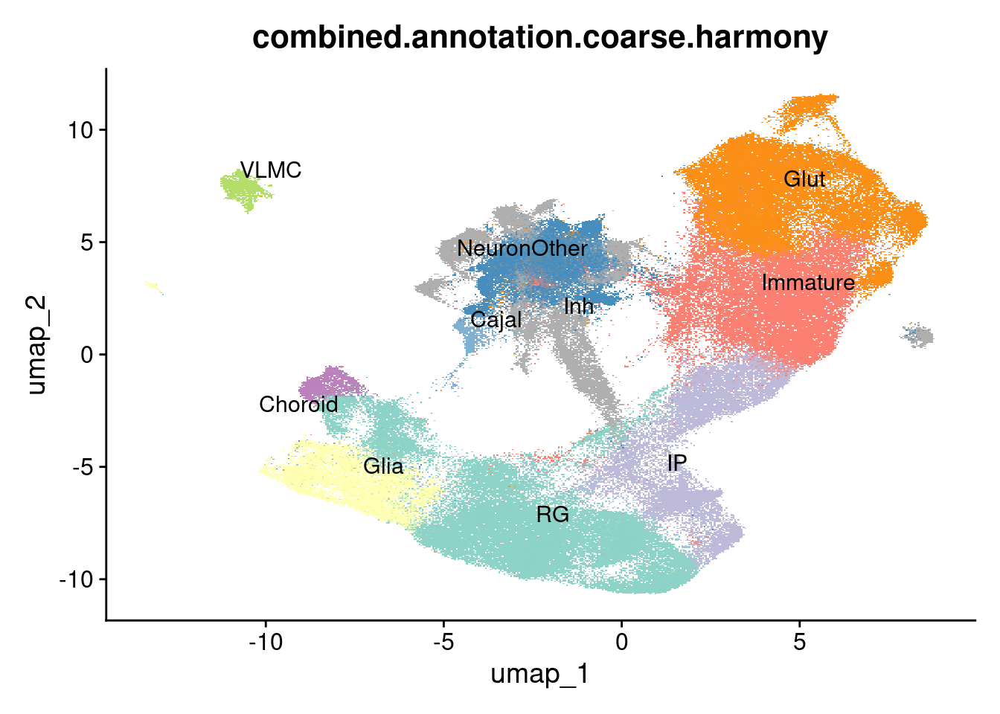
DimPlot(harmony.batchandindividual.sct, group.by = "combined.annotation.fine.harmony", label = TRUE, repel = TRUE, cols = manual_palette_fine) + NoLegend()Rasterizing points since number of points exceeds 100,000.
To disable this behavior set `raster=FALSE`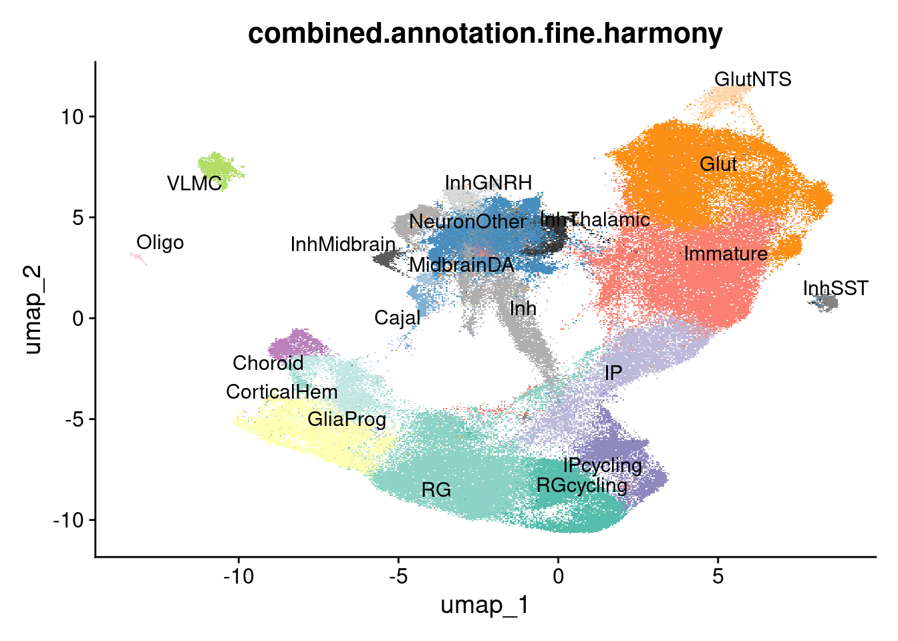
Plot cell type markers (in the control condition) in a dotplot format:
control_subset <- subset(harmony.batchandindividual.sct, subset = vireo.prob.singlet > 0.95 & nCount_RNA<20000 & nCount_RNA>2500 & treatment =="control10" )
control_subset$combined.annotation.fine.harmony.ordered <- factor(control_subset$combined.annotation.fine.harmony, levels=rev(c("RGcycling" , "RG", "CorticalHem", "GliaProg", "IPcycling", "IP", "Immature", "Glut", "GlutNTS", "NeuronOther", "Cajal", "MidbrainDA", "Inh", "InhThalamic", "InhGNRH", "InhSST", "InhMidbrain", "VLMC", "Oligo", "Choroid")))
features_ordered <- c("MKI67", "TOP2A", "BIRC5", #cycling cells
"HOPX", "LIFR", "PDGFD", "GLI3", #RG
"NES", "SOX2",
"RSPO1", "RSPO2", "WLS", "WNT2B", "WNT5A", "WNT8B", "GJA1", #corticalhem
"SPARC", "AQP4", "SPARCL1", "GFAP", #glialprog
"EOMES", "NEUROD1", #IP
"RBFOX3", "NR4A2", "CRYM", "BCL11B",
"SLA", "SATB2", "SLC17A7",
"NTS",
"LHX9", "NEFM", "SYP", "SYN1", "DLG4",#neuronother
"RELN", "NDNF", "TP73", "EMX2", #Cajal
"FOXA2", "TH" , "EN1", "NTN1", "LMX1A", "SHH", #DA
"GAD1", "GAD2", "DLX1", "DLX2", "DLX5", "SCGN", #inh
"SIX3" , "ESRRG", "ISL1",
"GNRH1", "LHX8",
"SST",
"OTX2",
"MGP", "POSTN", "COL1A1" ,"PDGFRA","LUM", #VLMC
"PLP1", "S100B", "MPZ", #olig
"TTR", "CLIC6", "FOLR1" #Choroid
)
DotPlot(control_subset, col.min = 0, features = features_ordered, cols = c("light gray", "dark red"), group.by = "combined.annotation.fine.harmony.ordered") +
theme_linedraw() +
theme(
legend.direction = "horizontal",
legend.position = "bottom",
axis.title.y = element_blank(),
axis.title.x = element_blank(),
axis.text.x = element_text(angle = 60, vjust = 0, hjust=0)) +
scale_x_discrete(position = "top")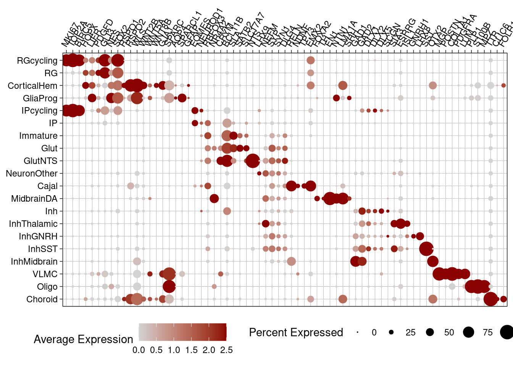
alluvial_data <- harmony.batchandindividual.sct@meta.data %>%
group_by(combined.annotation.fine.harmony, combined.annotation.coarse.harmony) %>%
summarise(count=n()) %>%
as.data.frame()`summarise()` has grouped output by 'combined.annotation.fine.harmony'. You can
override using the `.groups` argument.alluvial_data$combined.annotation.fine.harmony <- factor(alluvial_data$combined.annotation.fine.harmony, levels = fine.order)
alluvial_data$combined.annotation.coarse.harmony <- factor(alluvial_data$combined.annotation.coarse.harmony, levels = coarse.order, ordered = TRUE)
alluvial_data_long <- to_lodes_form(alluvial_data,
key = "celltype", value = "type", id = "classification",
axes = 1:2)
ggplot(data = alluvial_data_long,
aes(x = celltype, stratum = type, alluvium = classification, y = count)) +
geom_flow(aes(fill=type)) +
geom_stratum(aes( fill=type), color="white") + #color=type,
# geom_text(stat = "stratum", aes(label = type)) +
theme_minimal() +
scale_fill_manual(values=c(manual_palette_fine, manual_palette_coarse) )+
scale_color_manual(values=c(manual_palette_fine, manual_palette_coarse) )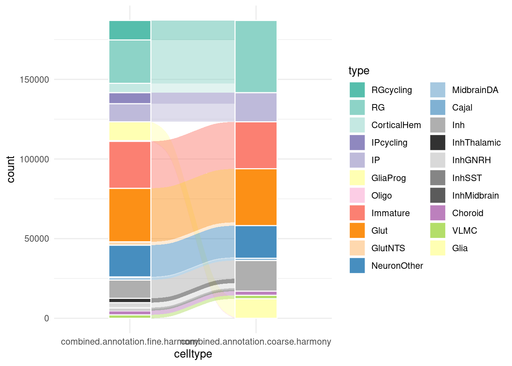
Here, I plot stacked bar charts of fractional abundance of each cell type in each individual and condition, as well as a few direct comparisons of individuals collected in two batches and organoids collected after long-term culture in physiological vs. atmospheric oxygen.
vireo.order <- c(
"NA19102", "NA18511", "NA18489",
"NA19128", "NA18501",
"NA19207", "NA18519", #double batch
"NA18507",
"NA19144", "NA19210","NA18853",
"NA18856", "NA19098", "NA18913", "NA19153",
"NA18517",
"NA19093",
"NA18502","NA19143",
"NA18508", "NA19190"
)In the control condition:
control_subset@meta.data %>%
group_by(vireo.individual) %>%
mutate(cells=n()) %>%
ungroup() %>%
group_by(vireo.individual, combined.annotation.fine.harmony) %>%
mutate(cellnums=n()) %>%
ungroup() %>%
mutate(cellfrac=cellnums/cells) %>%
dplyr::select(vireo.individual, combined.annotation.fine.harmony, cells, cellnums, cellfrac) %>%
unique() %>%
ggplot(mapping = aes(x=factor(vireo.individual, vireo.order), y=cellfrac, fill=factor(combined.annotation.fine.harmony, fine.order))) +
geom_col() +
scale_fill_manual(values = manual_palette_fine) +
ggtitle("Fine annotation, cell type fractions") + coord_flip() + theme_light()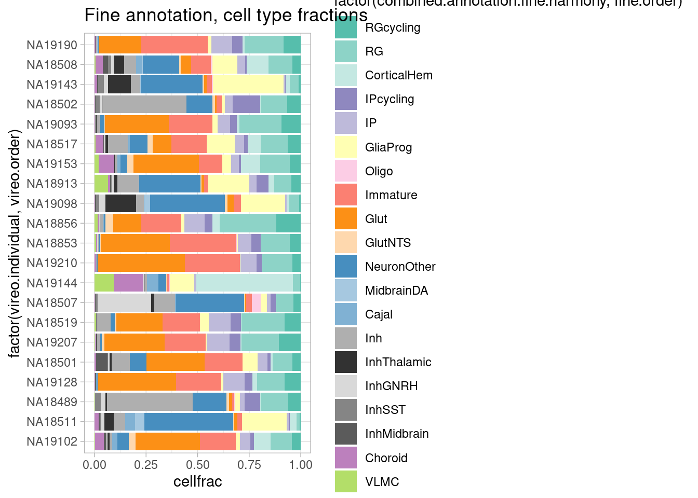
Across the three treatment conditions:
plot.data <- subset(harmony.batchandindividual.sct, subset = vireo.prob.singlet > 0.95 & nCount_RNA<20000 & nCount_RNA>2500 & treatment !="control21" )
plot.data@meta.data %>%
group_by(vireo.individual, treatment) %>%
mutate(cells=n()) %>%
ungroup() %>%
group_by(vireo.individual, combined.annotation.fine.harmony, treatment) %>%
mutate(cellnums=n()) %>%
ungroup() %>%
mutate(cellfrac=cellnums/cells) %>%
dplyr::select(vireo.individual, combined.annotation.fine.harmony, cells, cellnums, cellfrac, treatment) %>%
unique() %>%
ggplot(mapping = aes(x=factor(vireo.individual, vireo.order), y=cellfrac, fill=factor(combined.annotation.fine.harmony, fine.order))) +
geom_col() +
scale_fill_manual(values = manual_palette_fine) +
ggtitle("Fine annotation, cell type fractions") + coord_flip() + theme_light() + facet_wrap(vars(treatment), nrow = 1)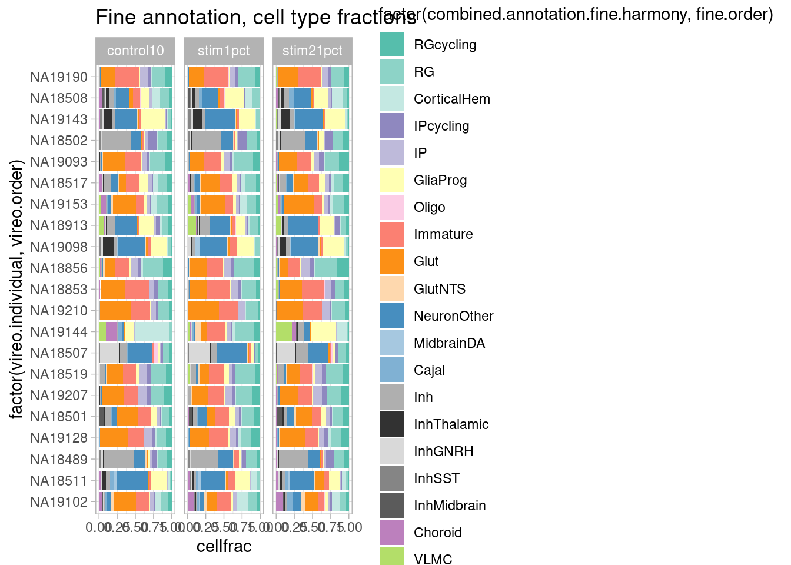
rm(plot.data)Across batches in the two individuals collected twice:
repeat.data <- subset(harmony.batchandindividual.sct, subset = vireo.prob.singlet > 0.95 & nCount_RNA<20000 & nCount_RNA>2500 & treatment =="control10" & vireo.individual %in% c("NA18519", "NA19207"))
repeat.data@meta.data %>%
group_by(vireo.individual, batch) %>%
mutate(cells=n()) %>%
ungroup() %>%
group_by(vireo.individual, combined.annotation.fine.harmony, batch) %>%
mutate(cellnums=n()) %>%
ungroup() %>%
mutate(cellfrac=cellnums/cells) %>%
dplyr::select(vireo.individual, combined.annotation.fine.harmony, cells, cellnums, cellfrac, batch) %>%
unique() %>%
ggplot(mapping = aes(x=factor(vireo.individual, vireo.order), y=cellfrac, fill=factor(combined.annotation.fine.harmony, fine.order))) +
geom_col() +
scale_fill_manual(values = manual_palette_fine) +
ggtitle("Fine annotation, cell type fractions") + coord_flip() + theme_light() + facet_wrap(vars(batch), nrow = 1) 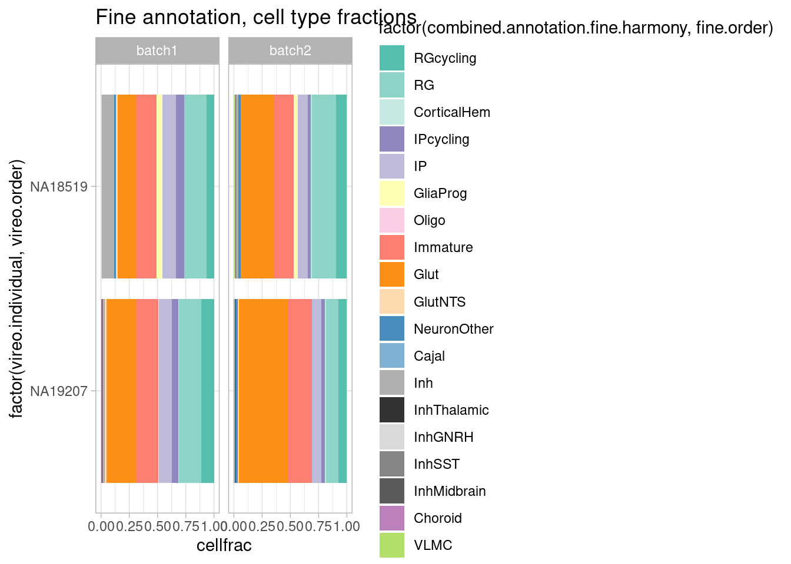
rm(repeat.data)Compare organoids cultured chronically at 10% oxygen and 21% oxygen (not acute perturbation condition).
plot.data.oxygen <- subset(harmony.batchandindividual.sct, subset = vireo.prob.singlet > 0.95 & nCount_RNA<20000 & nCount_RNA>2500 & treatment %in% c("control10", "control21") & vireo.individual %in% c( "NA19207", "NA18519", "NA18489", "NA18511", "NA19102"))
plot.data.oxygen@meta.data %>%
group_by(vireo.individual, treatment) %>%
mutate(cells=n()) %>%
ungroup() %>%
group_by(vireo.individual, combined.annotation.fine.harmony, treatment) %>%
mutate(cellnums=n()) %>%
ungroup() %>%
mutate(cellfrac=cellnums/cells) %>%
dplyr::select(vireo.individual, combined.annotation.fine.harmony, cells, cellnums, cellfrac, treatment) %>%
unique() %>%
ggplot(mapping = aes(x=factor(vireo.individual, vireo.order), y=cellfrac, fill=factor(combined.annotation.fine.harmony, fine.order))) +
geom_col() +
scale_fill_manual(values = manual_palette_fine) +
ggtitle("Fine annotation, cell type fractions") + coord_flip() + theme_light() + facet_wrap(vars(treatment), nrow = 1)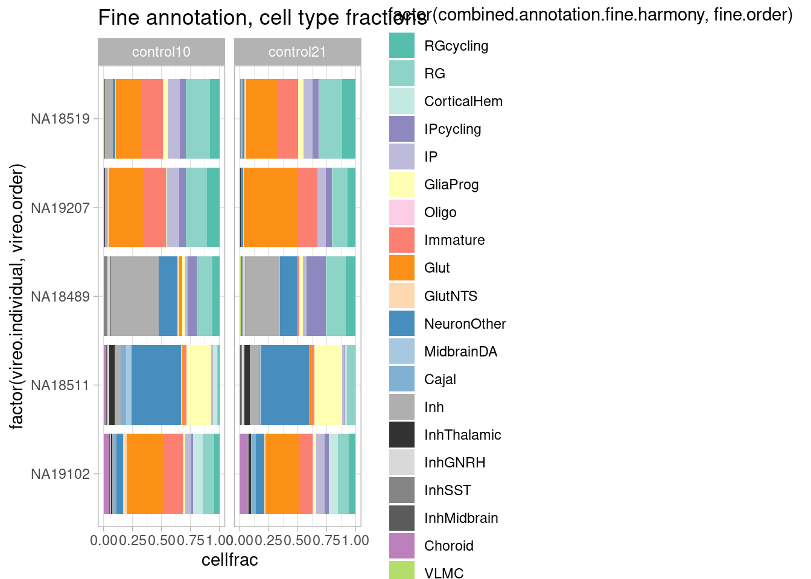
rm(plot.data.oxygen)First, generate and filter pseudobulk data from the Seurat object.
subset_seurat <- subset(harmony.batchandindividual.sct, subset = vireo.prob.singlet > 0.95 & nCount_RNA<20000 & nCount_RNA>2500 & treatment !="control21" )pseudo_coarse_quality <- generate.pseudobulk(subset_seurat, labels = c("combined.annotation.coarse.harmony", "treatment", "vireo.individual", "batch"))
pseudo_fine_quality <- generate.pseudobulk(subset_seurat, labels = c("combined.annotation.fine.harmony", "treatment", "vireo.individual", "batch"))pseudo_fine_quality <- readRDS(file = "output/pseudo_fine_quality_filtered_de_20240305.RDS")
pseudo_coarse_quality <- readRDS(file = "output/pseudo_coarse_quality_filtered_de_20240305.RDS")pseudo_coarse_quality_de <- filter.pseudobulk(pseudo_coarse_quality, threshold = 20)
pseudo_fine_quality_de <- filter.pseudobulk(pseudo_fine_quality, threshold = 20)For the coarse cell type assignment, DE and QTL analysis therefore has available:
pseudo_coarse_quality_de$meta %>% group_by(vireo.individual, treatment) %>% summarize(celltypes=length(combined.annotation.coarse.harmony)) %>% ungroup() %>% group_by(treatment) %>% summarize(median(celltypes))`summarise()` has grouped output by 'vireo.individual'. You can override using
the `.groups` argument.# A tibble: 3 × 2
treatment `median(celltypes)`
<chr> <int>
1 control10 7
2 stim1pct 7
3 stim21pct 7Median 7 cell types (out of a total of 10)
For the fine clustering:
pseudo_fine_quality_de$meta %>% group_by(vireo.individual, treatment) %>% summarize(celltypes=length(combined.annotation.fine.harmony)) %>% ungroup() %>% group_by(treatment) %>% summarize(median(celltypes))`summarise()` has grouped output by 'vireo.individual'. You can override using
the `.groups` argument.# A tibble: 3 × 2
treatment `median(celltypes)`
<chr> <int>
1 control10 12
2 stim1pct 11
3 stim21pct 11Median 11-12 cell types (out of a total of 20)
Or, plotted for the control condition:
pseudo_coarse_quality_de$meta %>%
filter(treatment=="control10") %>%
group_by(vireo.individual) %>%
summarize(celltypes=length(combined.annotation.coarse.harmony)) %>%
ggplot(aes(x=factor(vireo.individual, vireo.order), y=celltypes)) +
geom_segment( aes(x=factor(vireo.individual, vireo.order), xend=factor(vireo.individual, vireo.order), y=0, yend=celltypes), color="gray") +
geom_point() +
coord_flip() +
geom_hline(yintercept = 7, linetype=2) +
theme_light() + ylim(0, 13)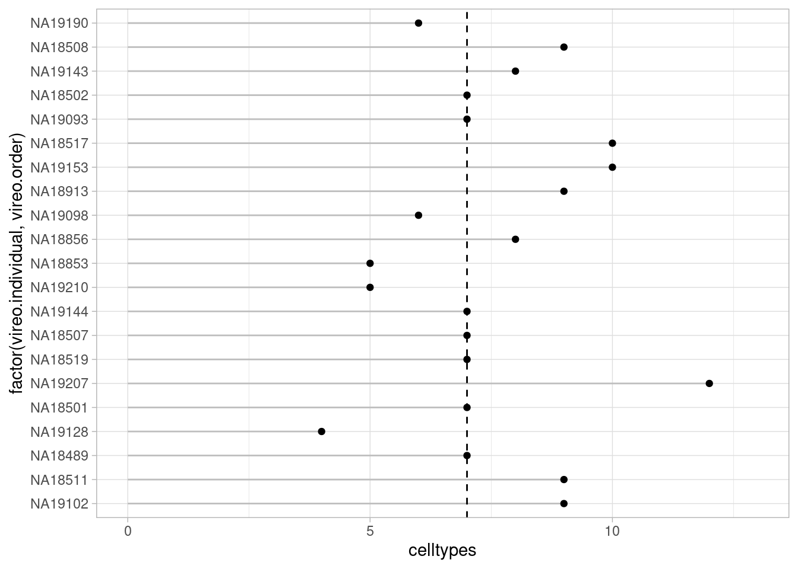
pseudo_fine_quality_de$meta %>%
filter(treatment=="control10") %>%
group_by(vireo.individual) %>%
summarize(celltypes=length(combined.annotation.fine.harmony)) %>%
ggplot(aes(x=factor(vireo.individual, vireo.order), y=celltypes)) +
geom_segment( aes(x=factor(vireo.individual, vireo.order), xend=factor(vireo.individual, vireo.order), y=0, yend=celltypes), color="gray") +
geom_point() +
ylim(0, 20) +
coord_flip() +
geom_hline(yintercept = 11, linetype=2) +
theme_light() 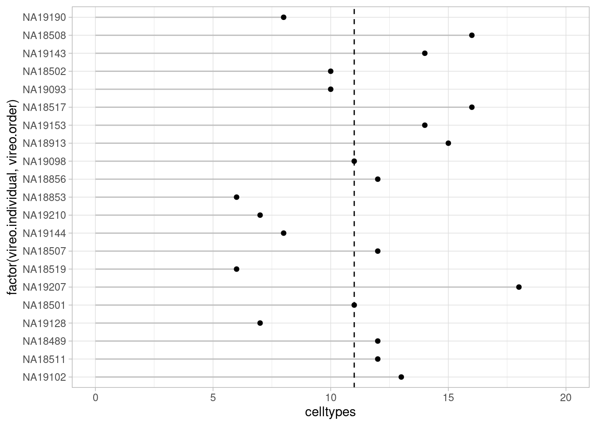
Conversely, to ask how many individuals are there for each cell type:
pseudo_fine_quality_de$meta %>%
filter(treatment=="control10") %>%
group_by(combined.annotation.fine.harmony) %>%
summarize(individuals=length(unique(vireo.individual))) %>%
ggplot(aes(x=factor(combined.annotation.fine.harmony, rev(fine.order)), y=individuals)) +
geom_segment( aes(x=factor(combined.annotation.fine.harmony, rev(fine.order)), xend=factor(combined.annotation.fine.harmony, rev(fine.order)), y=0, yend=individuals), color="gray") +
geom_point() +
ylim(0, 21) +
coord_flip() +
geom_hline(yintercept = 11.5, linetype=2, color="black") +
theme_light() 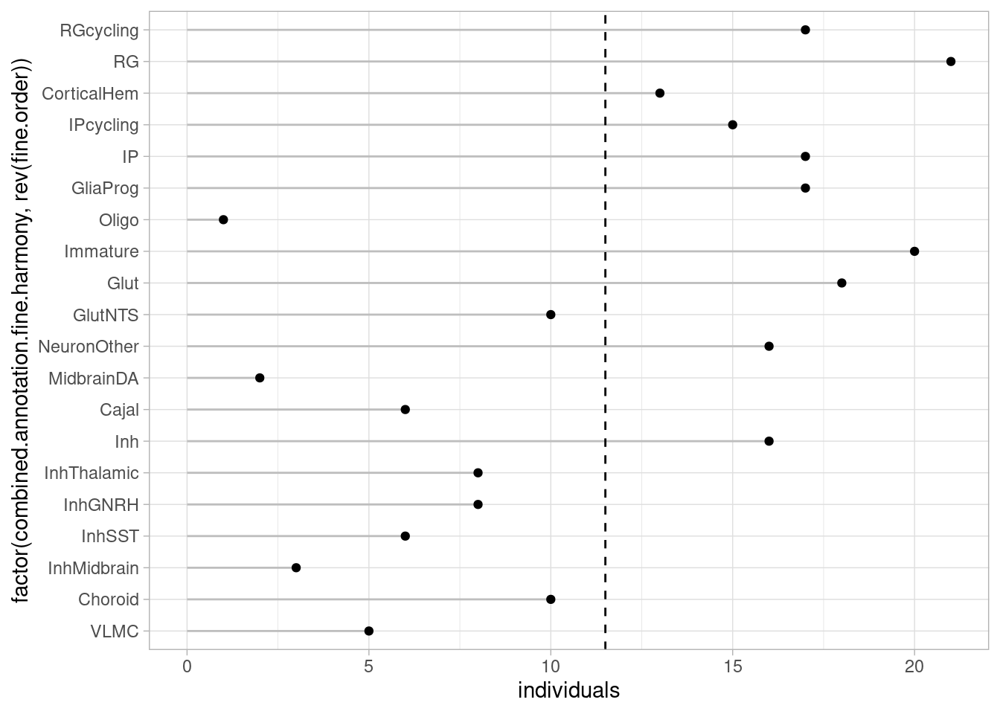
pseudo_coarse_quality_de$meta %>%
filter(treatment=="control10") %>%
group_by(combined.annotation.coarse.harmony) %>%
summarize(individuals=length(unique(vireo.individual))) %>%
ggplot(aes(x=factor(combined.annotation.coarse.harmony, coarse.order), y=individuals)) +
geom_segment( aes(x=factor(combined.annotation.coarse.harmony, coarse.order), xend=factor(combined.annotation.coarse.harmony, coarse.order), y=0, yend=individuals), color="gray") +
geom_point() +
ylim(0, 21) +
coord_flip() +
geom_hline(yintercept = 17.5, linetype=2, color="gray") +
theme_light()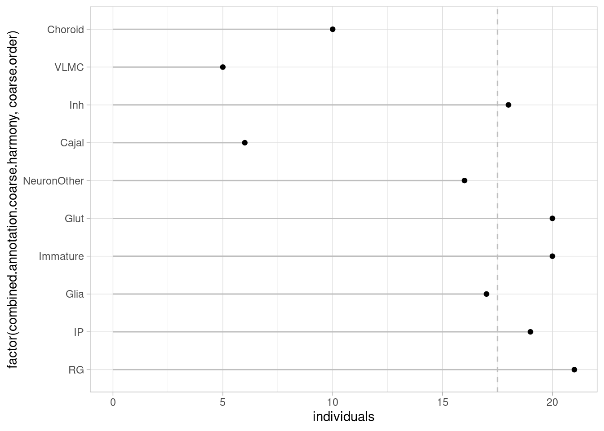
Here, I use a linear mixed model to test for the effect of different experimental factors on cell type proportion, using the cell line (vireo.individual) as a blocking factor.
Following the guidance of the propeller package documentation, I first get transformed proportions.
hypoxia_subset <- subset(subset_seurat, treatment %in% c("control10", "stim1pct"))
hyperoxia_subset <- subset(subset_seurat, treatment %in% c("control10", "stim21pct"))
hypoxia_subset$sample <- paste(hypoxia_subset$vireo.individual, hypoxia_subset$batch, hypoxia_subset$treatment, sep="_")
hyperoxia_subset$sample <- paste(hyperoxia_subset$vireo.individual, hyperoxia_subset$batch, hyperoxia_subset$treatment, sep="_")
props_coarse_hypoxia_logit <- getTransformedProps(hypoxia_subset$combined.annotation.coarse.harmony, hypoxia_subset$sample, transform="logit")Performing logit transformation of proportionsprops_fine_hypoxia_logit <- getTransformedProps(hypoxia_subset$combined.annotation.fine.harmony, hypoxia_subset$sample, transform="logit")Performing logit transformation of proportionsprops_coarse_hyperoxia_logit <- getTransformedProps(hyperoxia_subset$combined.annotation.coarse.harmony, hyperoxia_subset$sample, transform="logit")Performing logit transformation of proportionsprops_fine_hyperoxia_logit <- getTransformedProps(hyperoxia_subset$combined.annotation.fine.harmony, hyperoxia_subset$sample, transform="logit")Performing logit transformation of proportionsNow set up a linear mixed model and test for the treatment effect:
metadata <- hypoxia_subset@meta.data[match(colnames(props_coarse_hypoxia_logit$TransformedProps), hypoxia_subset@meta.data$sample),] %>%
mutate(sex=ifelse(sex=="female", 0, 1)) %>%
dplyr::select(vireo.individual, treatment, batch, sex, FFpassage)
rownames(metadata) <- colnames(props_coarse_hypoxia_logit$TransformedProps)
metadata$treatment <- factor(metadata$treatment, levels = c("control10", "stim1pct"))
model_formula <- model.matrix(~treatment + batch+ sex + FFpassage, metadata)
# model_formula <- model.matrix(~treatment, metadata)
dupcor <- duplicateCorrelation(props_coarse_hypoxia_logit$TransformedProps, design=model_formula, block=metadata$vireo.individual)
fit <- lmFit(props_coarse_hypoxia_logit$TransformedProps, design=model_formula, block=metadata$vireo.individual, correlation=dupcor$consensus)
fit <- eBayes(fit)
res <- topTable(fit,coef="treatmentstim1pct", number=dim(props_coarse_hypoxia_logit$TransformedProps)[1])
print(res) logFC AveExpr t P.Value adj.P.Val B
Immature 0.42349175 -2.115511 2.1925995 0.03245852 0.3245852 -3.604376
Choroid -0.28155017 -4.930373 -1.5132088 0.13578534 0.5008210 -4.386568
Inh -0.23771491 -2.955164 -1.2513502 0.21594903 0.5008210 -4.619858
IP -0.17799854 -2.748508 -1.1778246 0.24379031 0.5008210 -4.678016
RG 0.16545646 -1.348556 1.1612473 0.25041050 0.5008210 -4.690674
Cajal -0.14862084 -5.952660 -0.7233762 0.47242480 0.7152328 -4.962781
VLMC 0.16364397 -5.967844 0.6777910 0.50066295 0.7152328 -4.984061
NeuronOther -0.12701169 -3.012712 -0.5620085 0.57632695 0.7204087 -5.032004
Glia -0.07207261 -3.128278 -0.3386078 0.73615691 0.8130144 -5.099474
Glut -0.04876146 -2.185267 -0.2376442 0.81301435 0.8130144 -5.119043Test also for the batch effect:
res <- topTable(fit,coef="batchbatch2", number=dim(props_coarse_hypoxia_logit$TransformedProps)[1])
print(res) logFC AveExpr t P.Value adj.P.Val B
Cajal 1.0904972 -5.952660 2.8109965 0.006770663 0.06770663 -2.421572
IP -0.7072148 -2.748508 -2.4783738 0.016201683 0.08100842 -3.149966
NeuronOther 0.8968632 -3.012712 2.1017287 0.040035264 0.10956696 -3.885975
RG -0.5546896 -1.348556 -2.0617800 0.043826785 0.10956696 -3.958127
Inh -0.6237865 -2.955164 -1.7390404 0.087458826 0.17491765 -4.496921
VLMC 0.7058495 -5.967844 1.5483142 0.127114871 0.20630110 -4.776955
Glia 0.5948204 -3.128278 1.4800073 0.144410770 0.20630110 -4.870049
Choroid 0.4578643 -4.930373 1.3032601 0.197757476 0.24719685 -5.092867
Immature -0.2907003 -2.115511 -0.7970968 0.428722643 0.45181945 -5.581403
Glut -0.2935273 -2.185267 -0.7576178 0.451819452 0.45181945 -5.609906Test also for the sex effect:
res <- topTable(fit,coef="sex", number=dim(props_coarse_hypoxia_logit$TransformedProps)[1])
print(res) logFC AveExpr t P.Value adj.P.Val B
Glia -1.8731512 -3.128278 -2.2715046 0.02693343 0.2354849 -3.426618
Inh -1.4937829 -2.955164 -2.0296633 0.04709698 0.2354849 -3.784421
Glut 1.1938788 -2.185267 1.5018440 0.13869065 0.2666879 -4.445404
NeuronOther -1.3122409 -3.012712 -1.4987420 0.13949213 0.2666879 -4.448770
Cajal -1.1470160 -5.952660 -1.4410136 0.15508499 0.2666879 -4.510271
Immature 1.0653565 -2.115511 1.4237161 0.16001276 0.2666879 -4.528271
RG 0.6404299 -1.348556 1.1601835 0.25083972 0.3583425 -4.777576
Choroid -0.7390161 -4.930373 -1.0252058 0.30962348 0.3870294 -4.886719
IP 0.2825794 -2.748508 0.4826349 0.63121456 0.7013495 -5.193127
VLMC -0.1614681 -5.967844 -0.1726222 0.86356359 0.8635636 -5.270067And the passage number: Test also for the sex effect:
res <- topTable(fit,coef="FFpassage", number=dim(props_coarse_hypoxia_logit$TransformedProps)[1])
print(res) logFC AveExpr t P.Value adj.P.Val B
Glia -0.13358247 -3.128278 -3.1609374 0.002525078 0.02525078 -1.657870
VLMC -0.12048778 -5.967844 -2.5134977 0.014822423 0.07411212 -3.197392
Cajal -0.08076432 -5.952660 -1.9799024 0.052579408 0.17526469 -4.254219
RG 0.04776287 -1.348556 1.6883836 0.096835181 0.24208795 -4.739888
Immature 0.05819181 -2.115511 1.5174554 0.134712190 0.26942438 -4.992331
Choroid -0.04703966 -4.930373 -1.2733475 0.208094418 0.34682403 -5.309646
Glut 0.04260157 -2.185267 1.0457208 0.300130977 0.42875854 -5.558219
Inh -0.02694430 -2.955164 -0.7143796 0.477925558 0.59740695 -5.835633
IP 0.01365914 -2.748508 0.4552262 0.650686219 0.67368078 -5.980993
NeuronOther -0.01899358 -3.012712 -0.4232975 0.673680781 0.67368078 -5.994486And again with the fine classification:
metadata <- hypoxia_subset@meta.data[match(colnames(props_fine_hypoxia_logit$TransformedProps), hypoxia_subset@meta.data$sample),] %>% mutate(sex=ifelse(sex=="female", 0, 1)) %>% dplyr::select(vireo.individual, treatment, batch, sex, FFpassage)
rownames(metadata) <- colnames(props_fine_hypoxia_logit$TransformedProps)
metadata$treatment <- factor(metadata$treatment, levels = c("control10", "stim1pct"))
model_formula <- model.matrix(~treatment + batch+ sex + FFpassage, metadata)
# model_formula <- model.matrix(~treatment, metadata)
dupcor <- duplicateCorrelation(props_fine_hypoxia_logit$TransformedProps, design=model_formula, block=metadata$vireo.individual)
fit <- lmFit(props_fine_hypoxia_logit$TransformedProps, design=model_formula, block=metadata$vireo.individual, correlation=dupcor$consensus)
fit <- eBayes(fit)
res <- topTable(fit,coef="treatmentstim1pct", number=dim(props_fine_hypoxia_logit$TransformedProps)[1])
print(res) logFC AveExpr t P.Value adj.P.Val B
InhThalamic -0.53872343 -5.270054 -2.48416756 0.01601306 0.3061521 -3.115975
Immature 0.41912028 -2.132286 2.09003739 0.04118271 0.3061521 -3.706018
RG 0.29697731 -2.012206 2.04165702 0.04592281 0.3061521 -3.772849
IPcycling -0.26315678 -3.981136 -1.53032989 0.13158335 0.5379789 -4.397115
Choroid -0.28544026 -4.946076 -1.51865106 0.13449472 0.5379789 -4.409536
Inh -0.27689412 -3.650756 -1.39031191 0.16995354 0.5665118 -4.540354
Oligo -0.36425010 -6.876801 -1.20647241 0.23272417 0.6085463 -4.709225
IP -0.17708342 -3.243165 -1.17895215 0.24341851 0.6085463 -4.732588
CorticalHem -0.15081140 -4.218096 -0.81532599 0.41835131 0.7517655 -4.992978
RGcycling 0.14181641 -3.099198 0.81272463 0.41982902 0.7517655 -4.994511
Cajal -0.15252339 -5.968346 -0.73482989 0.46551934 0.7517655 -5.038215
InhMidbrain -0.15543030 -6.370012 -0.70633803 0.48291607 0.7517655 -5.053129
VLMC 0.15880503 -5.984015 0.65424174 0.51564282 0.7517655 -5.078907
NeuronOther -0.13157741 -3.061484 -0.58804347 0.55887498 0.7517655 -5.108868
GliaProg -0.09007115 -3.319190 -0.50378367 0.61639608 0.7517655 -5.142450
MidbrainDA 0.10873054 -6.945211 0.48178814 0.63184019 0.7517655 -5.150373
Glut -0.10224457 -2.434556 -0.47167047 0.63900065 0.7517655 -5.153901
InhGNRH 0.06492643 -5.109956 0.29321454 0.77044559 0.8560507 -5.203893
InhSST -0.03970667 -6.121439 -0.18772252 0.85177495 0.8966052 -5.222515
GlutNTS -0.02379461 -5.044153 -0.08813882 0.93008181 0.9300818 -5.232607And the batch effect:
res <- topTable(fit,coef="batchbatch2", number=dim(props_fine_hypoxia_logit$TransformedProps)[1])
print(res) logFC AveExpr t P.Value adj.P.Val
MidbrainDA 1.686777480 -6.945211 3.98865430 0.0001953226 0.002474272
InhMidbrain 1.614796522 -6.370012 3.91614486 0.0002474272 0.002474272
InhThalamic 1.447490586 -5.270054 3.56200732 0.0007615838 0.005077226
Oligo 1.841403487 -6.876801 3.25484803 0.0019300592 0.009650296
InhSST 1.069137668 -6.121439 2.69743279 0.0092231958 0.033624961
Cajal 1.035952913 -5.968346 2.66351047 0.0100874882 0.033624961
CorticalHem 0.889986926 -4.218096 2.56770288 0.0129433771 0.036981077
RG -0.651129504 -2.012206 -2.38886130 0.0203065083 0.050766271
Inh -0.857372353 -3.650756 -2.29737569 0.0253699026 0.056377561
IP -0.586235607 -3.243165 -2.08283330 0.0418603984 0.083720797
NeuronOther 0.809188047 -3.061484 1.92993016 0.0587033435 0.106733352
IPcycling -0.595008066 -3.981136 -1.84653431 0.0701189677 0.116864946
VLMC 0.632671989 -5.984015 1.39096643 0.1697559779 0.261163043
Choroid 0.400133968 -4.946076 1.13608866 0.2607739486 0.372534212
Immature -0.351354565 -2.132286 -0.93502886 0.3538012082 0.471734944
Glut -0.298293902 -2.434556 -0.73435635 0.4658055249 0.582256906
InhGNRH 0.060332202 -5.109956 0.14540428 0.8849155093 0.993741277
RGcycling -0.024467615 -3.099198 -0.07482946 0.9406179504 0.993741277
GlutNTS 0.032249545 -5.044153 0.06374942 0.9493975090 0.993741277
GliaProg -0.002639811 -3.319190 -0.00787944 0.9937412771 0.993741277
B
MidbrainDA 0.5294088
InhMidbrain 0.3100114
InhThalamic -0.7280777
Oligo -1.5787091
InhSST -2.9851292
Cajal -3.0644121
CorticalHem -3.2841453
RG -3.6772805
Inh -3.8695222
IP -4.2958233
NeuronOther -4.5778828
IPcycling -4.7238302
VLMC -5.4181372
Choroid -5.7270943
Immature -5.9287585
Glut -6.0921036
InhGNRH -6.3467254
RGcycling -6.3544010
GlutNTS -6.3551594
GliaProg -6.3571361And the sex effect:
res <- topTable(fit,coef="sex", number=dim(props_fine_hypoxia_logit$TransformedProps)[1])
print(res) logFC AveExpr t P.Value adj.P.Val
InhSST -2.1141120712 -6.121439 -2.6567876996 0.01026733 0.2053466
Inh -1.6780857058 -3.650756 -2.2396931881 0.02911248 0.2911248
GliaProg -1.2391674328 -3.319190 -1.8423165926 0.07074292 0.3565224
MidbrainDA -1.5336979396 -6.945211 -1.8064264405 0.07624383 0.3565224
Glut 1.3504540879 -2.434556 1.6559764074 0.10333869 0.3565224
InhThalamic -1.2972499147 -5.270054 -1.5900638181 0.11746912 0.3565224
InhMidbrain -1.2049444218 -6.370012 -1.4555254494 0.15112553 0.3565224
Immature 1.0931141388 -2.132286 1.4489612497 0.15294355 0.3565224
NeuronOther -1.1927636823 -3.061484 -1.4169625981 0.16205152 0.3565224
Cajal -1.0645498970 -5.968346 -1.3633025897 0.17826122 0.3565224
Oligo -1.4068264758 -6.876801 -1.2386087158 0.22067429 0.3817069
GlutNTS -1.2352170652 -5.044153 -1.2162078663 0.22902415 0.3817069
RG 0.6035828562 -2.012206 1.1029918414 0.27476369 0.4211484
InhGNRH -0.8809927430 -5.109956 -1.0575774249 0.29480388 0.4211484
Choroid -0.6677526505 -4.946076 -0.9443527970 0.34905943 0.4654126
RGcycling 0.5167078907 -3.099198 0.7871144990 0.43454441 0.5431805
IP 0.3547695827 -3.243165 0.6278277976 0.53267710 0.6266789
CorticalHem -0.3871933546 -4.218096 -0.5564176282 0.58014942 0.6446105
VLMC -0.0675877249 -5.984015 -0.0740146540 0.94126334 0.9908035
IPcycling 0.0001195088 -3.981136 0.0001847337 0.99985326 0.9998533
B
InhSST -2.695072
Inh -3.477805
GliaProg -4.121605
MidbrainDA -4.174471
Glut -4.386118
InhThalamic -4.473680
InhMidbrain -4.642413
Immature -4.650297
NeuronOther -4.688265
Cajal -4.750181
Oligo -4.885471
GlutNTS -4.908489
RG -5.018751
InhGNRH -5.060105
Choroid -5.155954
RGcycling -5.271664
IP -5.367941
CorticalHem -5.404181
VLMC -5.535030
IPcycling -5.537394And the passage number effect:
res <- topTable(fit,coef="FFpassage", number=dim(props_fine_hypoxia_logit$TransformedProps)[1])
print(res) logFC AveExpr t P.Value adj.P.Val B
InhMidbrain -0.103398626 -6.370012 -2.42212593 0.01870292 0.1643851 -3.162623
VLMC -0.108878894 -5.984015 -2.31218591 0.02448075 0.1643851 -3.369649
Oligo -0.135250457 -6.876801 -2.30919976 0.02465776 0.1643851 -3.375165
MidbrainDA -0.077673260 -6.945211 -1.77411245 0.08149891 0.3327063 -4.266881
Cajal -0.070884596 -5.968346 -1.76038343 0.08382125 0.3327063 -4.287109
GliaProg -0.058046943 -3.319190 -1.67356578 0.09981189 0.3327063 -4.411805
Immature 0.061213717 -2.132286 1.57350879 0.12125287 0.3409573 -4.548517
GlutNTS -0.079145009 -5.044153 -1.51118357 0.13638291 0.3409573 -4.629823
RG 0.040298265 -2.012206 1.42807467 0.15884210 0.3529824 -4.733573
InhSST -0.053958325 -6.121439 -1.31497189 0.19389640 0.3877928 -4.866057
Inh -0.048368933 -3.650756 -1.25190121 0.21582672 0.3924122 -4.935512
Choroid -0.038544468 -4.946076 -1.05708492 0.29502659 0.4917110 -5.129666
Glut 0.040372355 -2.434556 0.96003610 0.34117748 0.5248884 -5.214702
InhGNRH -0.038270112 -5.109956 -0.89089954 0.37680735 0.5382962 -5.270470
RGcycling 0.024008137 -3.099198 0.70921912 0.48114058 0.6415208 -5.397690
InhThalamic -0.015786287 -5.270054 -0.37523217 0.70890995 0.8571935 -5.557235
CorticalHem -0.012513242 -4.218096 -0.34871611 0.72861444 0.8571935 -5.565724
NeuronOther -0.006788170 -3.061484 -0.15638168 0.87629643 0.9692158 -5.608732
IPcycling -0.002673848 -3.981136 -0.08015162 0.93640336 0.9692158 -5.616724
IP -0.001129587 -3.243165 -0.03876529 0.96921584 0.9692158 -5.618906Note that the most dramatic changes are for sample 19144, which was readily identifiable by eye. Differences between treatment conditions for other cell types are modest and similar between individuals.
We can now repeat for the hyperoxia vs. normoxia comparison:
metadata <- hyperoxia_subset@meta.data[match(colnames(props_coarse_hyperoxia_logit$TransformedProps), hyperoxia_subset@meta.data$sample),] %>%
mutate(sex=ifelse(sex=="female", 0, 1)) %>%
dplyr::select(vireo.individual, treatment, batch, sex, FFpassage)
rownames(metadata) <- colnames(props_coarse_hyperoxia_logit$TransformedProps)
metadata$treatment <- factor(metadata$treatment, levels = c("control10", "stim21pct"))
model_formula <- model.matrix(~treatment + batch+ sex + FFpassage, metadata)
dupcor <- duplicateCorrelation(props_coarse_hyperoxia_logit$TransformedProps, design=model_formula, block=metadata$vireo.individual)
fit <- lmFit(props_coarse_hyperoxia_logit$TransformedProps, design=model_formula, block=metadata$vireo.individual, correlation=dupcor$consensus)
fit <- eBayes(fit)
res <- topTable(fit,coef="treatmentstim21pct", number=dim(props_coarse_hypoxia_logit$TransformedProps)[1])
print(res) logFC AveExpr t P.Value adj.P.Val B
Choroid -0.34765134 -4.966536 -2.04631230 0.04587348 0.4587348 -4.206424
Immature -0.25391201 -2.448336 -1.59869522 0.11603789 0.5801894 -4.411922
Cajal -0.15250413 -5.974537 -0.70621429 0.48325408 0.8153953 -4.686948
Inh 0.10183339 -2.753645 0.65548505 0.51508815 0.8153953 -4.696511
IP 0.07641741 -2.613698 0.64990276 0.51865850 0.8153953 -4.697521
Glia 0.11872324 -3.063634 0.61498420 0.54128709 0.8153953 -4.703649
VLMC 0.13080764 -6.011817 0.57058260 0.57077672 0.8153953 -4.710964
NeuronOther 0.08004257 -2.916632 0.42289440 0.67414207 0.8257494 -4.731422
RG 0.04097716 -1.385439 0.32942896 0.74317448 0.8257494 -4.741262
Glut 0.01529048 -2.151427 0.08572121 0.93202215 0.9320222 -4.755460And using the fine classification:
metadata <- hyperoxia_subset@meta.data[match(colnames(props_fine_hyperoxia_logit$TransformedProps), hyperoxia_subset@meta.data$sample),] %>% mutate(sex=ifelse(sex=="female", 0, 1)) %>% dplyr::select(vireo.individual, treatment, batch, sex, FFpassage)
rownames(metadata) <- colnames(props_fine_hyperoxia_logit$TransformedProps)
metadata$treatment <- factor(metadata$treatment, levels = c("control10", "stim21pct"))
model_formula <- model.matrix(~treatment + batch+ sex + FFpassage, metadata)
dupcor <- duplicateCorrelation(props_fine_hyperoxia_logit$TransformedProps, design=model_formula, block=metadata$vireo.individual)
fit <- lmFit(props_fine_hyperoxia_logit$TransformedProps, design=model_formula, block=metadata$vireo.individual, correlation=dupcor$consensus)
fit <- eBayes(fit)
res <- topTable(fit,coef="treatmentstim21pct", number=dim(props_fine_hyperoxia_logit$TransformedProps)[1])
print(res) logFC AveExpr t P.Value adj.P.Val B
Choroid -0.34282494 -4.975570 -2.04592384 0.04601609 0.4597177 -4.212639
CorticalHem -0.32778576 -4.307498 -1.92112022 0.06039958 0.4597177 -4.272812
IPcycling 0.23614627 -3.733601 1.85852520 0.06895765 0.4597177 -4.301907
RGcycling 0.19308261 -3.072246 1.61774820 0.11197898 0.4981607 -4.406657
Immature -0.25009749 -2.458063 -1.56210848 0.12454018 0.4981607 -4.429169
InhSST -0.21774745 -6.224356 -1.26522974 0.21162583 0.7054194 -4.537787
GliaProg 0.14998853 -3.208689 0.91535790 0.36437649 0.7545187 -4.639193
GlutNTS -0.19389426 -5.129465 -0.89559213 0.37474170 0.7545187 -4.644015
Inh 0.12474008 -3.423211 0.72430970 0.47223527 0.7545187 -4.681594
Cajal -0.14750325 -5.983553 -0.69045553 0.49308539 0.7545187 -4.688116
VLMC 0.13632445 -6.020866 0.60148757 0.55021989 0.7545187 -4.703814
InhGNRH 0.10606260 -5.092186 0.59812554 0.55244314 0.7545187 -4.704366
InhMidbrain 0.10486421 -6.259757 0.53474781 0.59518313 0.7545187 -4.714204
NeuronOther 0.09539418 -2.949957 0.53025130 0.59827365 0.7545187 -4.714861
Glut 0.09959027 -2.334210 0.52743756 0.60021139 0.7545187 -4.715269
IP -0.06042998 -3.182644 -0.52250554 0.60361496 0.7545187 -4.715980
InhThalamic -0.06772051 -5.039418 -0.37324067 0.71053960 0.8359289 -4.734373
MidbrainDA -0.06757325 -7.077464 -0.30445539 0.76203855 0.8467095 -4.740805
Oligo -0.02015175 -6.776323 -0.07753503 0.93850590 0.9436221 -4.752794
RG -0.00790735 -2.144891 -0.07107259 0.94362215 0.9436221 -4.752927
sessionInfo()R version 4.2.0 (2022-04-22)
Platform: x86_64-pc-linux-gnu (64-bit)
Running under: CentOS Linux 7 (Core)
Matrix products: default
BLAS/LAPACK: /software/openblas-0.3.13-el7-x86_64/lib/libopenblas_haswellp-r0.3.13.so
locale:
[1] LC_CTYPE=en_US.UTF-8 LC_NUMERIC=C LC_TIME=C
[4] LC_COLLATE=C LC_MONETARY=C LC_MESSAGES=C
[7] LC_PAPER=C LC_NAME=C LC_ADDRESS=C
[10] LC_TELEPHONE=C LC_MEASUREMENT=C LC_IDENTIFICATION=C
attached base packages:
[1] stats4 stats graphics grDevices utils datasets methods
[8] base
other attached packages:
[1] ggalluvial_0.12.5 limma_3.54.2 speckle_0.99.7
[4] GenomicRanges_1.50.2 GenomeInfoDb_1.34.9 IRanges_2.32.0
[7] S4Vectors_0.36.2 BiocGenerics_0.44.0 harmony_1.1.0
[10] Rcpp_1.0.12 glmGamPoi_1.8.0 sctransform_0.4.1
[13] ggrepel_0.9.4 SeuratObject_4.1.4 Seurat_4.4.0
[16] forcats_0.5.1 stringr_1.5.0 dplyr_1.1.4
[19] purrr_1.0.2 readr_2.1.4 tidyr_1.3.0
[22] tibble_3.2.1 ggplot2_3.4.4 tidyverse_1.3.1
[25] workflowr_1.7.0
loaded via a namespace (and not attached):
[1] utf8_1.2.4 spatstat.explore_3.0-6
[3] reticulate_1.34.0 tidyselect_1.2.0
[5] htmlwidgets_1.6.2 grid_4.2.0
[7] Rtsne_0.16 munsell_0.5.0
[9] codetools_0.2-18 ica_1.0-3
[11] statmod_1.4.36 future_1.33.1
[13] miniUI_0.1.1.1 withr_2.5.2
[15] spatstat.random_3.1-3 colorspace_2.1-0
[17] progressr_0.14.0 Biobase_2.58.0
[19] highr_0.9 knitr_1.45
[21] rstudioapi_0.13 SingleCellExperiment_1.20.1
[23] ROCR_1.0-11 tensor_1.5
[25] listenv_0.9.1 MatrixGenerics_1.10.0
[27] labeling_0.4.3 git2r_0.30.1
[29] GenomeInfoDbData_1.2.9 polyclip_1.10-0
[31] farver_2.1.1 rprojroot_2.0.3
[33] parallelly_1.37.0 vctrs_0.6.4
[35] generics_0.1.3 xfun_0.41
[37] timechange_0.2.0 R6_2.5.1
[39] locfit_1.5-9.8 bitops_1.0-7
[41] spatstat.utils_3.0-4 cachem_1.0.8
[43] DelayedArray_0.24.0 promises_1.2.0.1
[45] scales_1.2.1 gtable_0.3.4
[47] globals_0.16.2 processx_3.8.2
[49] goftest_1.2-3 rlang_1.1.3
[51] splines_4.2.0 lazyeval_0.2.2
[53] spatstat.geom_3.2-7 broom_1.0.5
[55] yaml_2.3.5 reshape2_1.4.4
[57] abind_1.4-5 modelr_0.1.8
[59] backports_1.4.1 httpuv_1.6.5
[61] tools_4.2.0 ellipsis_0.3.2
[63] jquerylib_0.1.4 RColorBrewer_1.1-3
[65] ggridges_0.5.3 plyr_1.8.9
[67] zlibbioc_1.44.0 RCurl_1.98-1.13
[69] ps_1.7.5 deldir_1.0-6
[71] pbapply_1.5-0 cowplot_1.1.1
[73] zoo_1.8-12 SummarizedExperiment_1.28.0
[75] haven_2.5.0 cluster_2.1.3
[77] fs_1.6.3 magrittr_2.0.3
[79] data.table_1.14.8 scattermore_1.2
[81] lmtest_0.9-40 reprex_2.0.1
[83] RANN_2.6.1 whisker_0.4.1
[85] fitdistrplus_1.1-8 matrixStats_1.1.0
[87] hms_1.1.3 patchwork_1.1.3
[89] mime_0.12 evaluate_0.23
[91] xtable_1.8-4 readxl_1.4.0
[93] gridExtra_2.3 compiler_4.2.0
[95] KernSmooth_2.23-20 crayon_1.5.2
[97] htmltools_0.5.7 later_1.3.0
[99] tzdb_0.4.0 lubridate_1.9.3
[101] DBI_1.1.3 dbplyr_2.4.0
[103] MASS_7.3-56 Matrix_1.6-3
[105] cli_3.6.1 parallel_4.2.0
[107] igraph_1.5.1 pkgconfig_2.0.3
[109] getPass_0.2-2 sp_2.1-3
[111] plotly_4.10.0 spatstat.sparse_3.0-3
[113] xml2_1.3.3 bslib_0.5.1
[115] XVector_0.38.0 rvest_1.0.2
[117] callr_3.7.3 digest_0.6.34
[119] RcppAnnoy_0.0.19 spatstat.data_3.0-3
[121] rmarkdown_2.26 cellranger_1.1.0
[123] leiden_0.4.2 uwot_0.1.16
[125] edgeR_3.40.2 shiny_1.7.5.1
[127] lifecycle_1.0.4 nlme_3.1-157
[129] jsonlite_1.8.7 viridisLite_0.4.2
[131] fansi_1.0.5 pillar_1.9.0
[133] lattice_0.20-45 fastmap_1.1.1
[135] httr_1.4.7 survival_3.3-1
[137] glue_1.6.2 png_0.1-8
[139] stringi_1.8.1 sass_0.4.7
[141] irlba_2.3.5.1 future.apply_1.11.1